本noteの内容（無料パート）
この無料パートでは、以下をお伝えします：
1. Threadsの基本的な仕組み 2. なぜThreadsが稼ぎやすいのか 3. 収益化の全体像 4. 実際に稼いでいる人の事例
本noteの内容（有料パート）
有料パートでは、より実践的な内容をお届けします：
1. アカウント設計の具体的手順 2. プロフィール完成テンプレート 3. バズる投稿の型（ChatGPT活用法） 4. マネタイズまでの最短ルート 5. 継続的に稼ぐための改善サイクル
特別価格でのご提供
本noteは、通常価格4,980円での販売を予定しています。
しかし、この記事を読んでいるあなたには、**24時間限定で100円**でご提供します。
缶コーヒー1本分の投資で、あなたの人生が変わるかもしれません。
さあ、始めましょう
準備はいいですか？
それでは、Threadsで月5万円を稼ぐ具体的な方法を、順番にお伝えしていきます。
============================================================ 💎 有料パート - イントロダクション & STEP 1 ============================================================
有料パート - イントロダクション & STEP 1
イントロダクション：ここから本編です
ここからは、具体的な実践方法をお伝えしていきます。
このnoteを読み終わる頃には、あなたは以下ができるようになります：
それでは、STEP 1から順番に進めていきましょう。
---
STEP 1: アカウント設計の基礎
なぜアカウント設計が重要なのか？
Threadsで成功するかどうかは、最初の「アカウント設計」で80%決まります。
ここを間違えると、どれだけ頑張っても結果が出ません。
逆に、正しく設計すれば、あとは投稿するだけで自然とフォロワーが増えていきます。
アカウント設計の3つの要素
アカウント設計には、以下の3つの要素があります：
1. **ターゲット設定**：誰に向けて発信するのか？ 2. **ポジショニング**：どんな立ち位置で発信するのか？ 3. **提供価値**：フォロワーに何を提供するのか？
1. ターゲット設定の具体的手順
ターゲットを決める際は、以下のポイントを明確にします：
**年齢層**
**悩み・課題**
**目指している未来**
2. ポジショニングの決め方
ポジショニングとは、「あなたがどんな立場で発信するか」です。
Threadsでは、以下の3つのポジショニングが有効です：
**① 専門家ポジション**
**② 実践者ポジション**
**③ 初心者の味方ポジション**
**おすすめは「② 実践者ポジション」**
なぜなら、実績がなくても始められるからです。
「今、自分も挑戦しています」という姿勢で発信すれば、共感を得やすくなります。
3. 提供価値の明確化
最後に、「フォロワーに何を提供するのか」を決めます。
Threadsで人気のある提供価値は、以下の3つです：
**① 情報提供**
**② 共感・励まし**
**③ エンタメ**
**おすすめは「① 情報提供 + ② 共感」のミックス**
ノウハウを提供しつつ、自分の経験談も交えることで、信頼されやすくなります。
STEP 1のまとめ
ここまでで、以下が決まりました：
次のSTEP 2では、これをもとに「プロフィール」を完成させていきます。
============================================================ セクション 3 ============================================================
【驚愕】Threadsが今、最も稼ぎやすいSNSである3つの理由
SNS副業で稼ぎたいけれど、「X（旧Twitter）はもうレッドオーシャン」「Instagramはキラキラした投稿が必要そう」と感じていませんか？
実は今、最も注目すべきプラットフォームが**Threads**です。2023年7月にリリースされたばかりのこのSNSが、なぜ副業初心者でも稼ぎやすいのか、その決定的な理由を解説します。
理由1：爆速成長中のブルーオーシャン市場
Threadsの成長スピードは異常です。リリースからわずか9ヶ月で**ユーザー数が3倍**に膨れ上がり、現在1500万人を突破。X（旧Twitter）のアクティブユーザー数を上回る勢いで拡大しています。
**なぜこれが稼ぎやすさに直結するのか？**
まだ「プロの発信者」が本格参入していないからです。YouTubeやInstagramで既に成功している強者たちが、Threadsにはほとんどいません。つまり、**今始めれば先行者利益を独占できる**のです。
実際に、SNS経験ゼロの主婦が3ヶ月で月8桁を達成したり、会社員が副業で月収20万円を突破したりする事例が続出しています。これは他のSNSでは考えられないスピード感です。
理由2：新規アカウントを優遇するアルゴリズム
Threadsの最大の特徴は、**新規アカウントに異常なブーストをかける**アルゴリズムです。
他のSNSでは、フォロワーが少ないうちは投稿が全く見られません。しかしThreadsでは違います：
この現象が起きる理由は、Threadsがユーザー数を増やすため、意図的に新規ユーザーを優遇しているからです。**フォロワー0でも投稿がバズる**という、他のSNSでは絶対に起こらない現象が日常茶飯事なのです。
理由3：「共感」ベースで勝負できる
InstagramやTikTokでは、見た目の良さや派手な演出が重要視されます。しかしThreadsは**テキスト中心のSNS**。キラキラした生活を演出する必要はありません。
**Threadsで求められるのは「共感」です。**
こうした等身大の投稿が、むしろ多くの人に刺さります。完璧である必要はなく、**過去の自分と同じ悩みを持つ人に向けて発信する**だけで十分なのです。
最短で収益化するための黄金ルート
これら3つの理由を活かして、最短で収益を上げる方法をご紹介します。
STEP1：HARMの法則でジャンル選定
まず、収益化しやすいジャンルを選びましょう。HARMの法則に従って選ぶのがベストです：
初心者におすすめは「副業×20代OL」のような、**明確なペルソナ設定**です。
STEP2：収益導線を先に作る
投稿を始める前に、何で稼ぐかを決めておきましょう：
1. **オプトインアフィリエイト**（1件500-2000円、最も初心者向け） 2. **楽天・Amazonアフィリエイト**（実績不要で即開始可能） 3. **note・Brain販売**（実績ができてから）
特にオプトインアフィリエイトは、**無料の案件なので成約しやすく**、初月から10-20万円を狙えます。
STEP3：ChatGPTで投稿を量産
手動で投稿を考えるのは非効率です。ChatGPTを活用して一気に量産しましょう：
「あなたはSNSマーケターです。20代OLに向けて共感される副業系投稿を10個作成してください。構成は『強い一文』『共感あるある』『行動促し』で」
このようなプロンプトで、**10個ずつ投稿案を量産**し、スプレッドシートに保存。毎日3回（朝・昼・夜）にコピペして投稿するだけです。
STEP4：継続と改善
1ヶ月間は絶対にやめず、毎日投稿を続けてください。バズった投稿があれば、**同じパターンで横展開**します。Threadsでは同じような投稿でも、日によって反応が大きく変わるのが特徴です。
まとめ：今すぐ始めるべき理由
Threadsは間違いなく、**2024年最大のチャンス**です。新規優遇のアルゴリズムが続く今のうちに始めれば、他のSNSでは絶対に不可能なスピードで結果を出せます。
ただし、この優位性は永続的ではありません。強者の参入が本格化すれば、今のような「誰でも稼げる」状況は終わります。
**行動するなら、今この瞬間です。**
============================================================ セクション 4 ============================================================
なぜ今、Threadsなのか？新興SNSで月5万を狙う理由
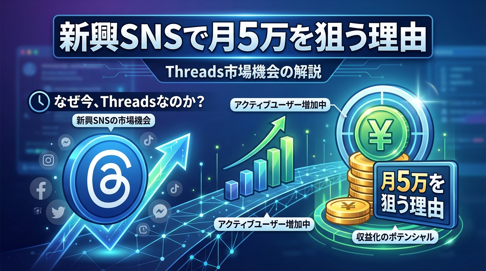
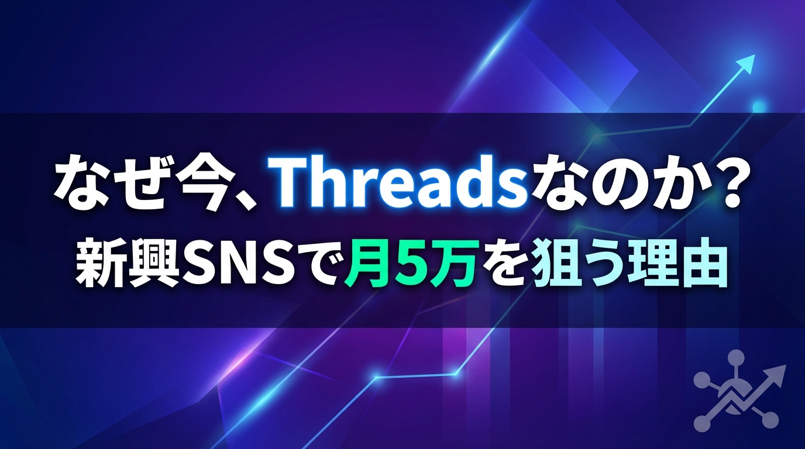
新興市場の圧倒的な先行者利益
Threadsがリリースされた今、私たちは歴史的なチャンスの前に立っています。現在のユーザー数は約1,100万人。これがどれほど重要な数字かご存知でしょうか？
TwitterのフォロワーZEROから1,000人を目指すのと、Threadsでフォロワー1,000人を目指すのでは、その難易度は雲泥の差です。Twitterには既に何百万人もの発信者がひしめき合っており、どんなに良いコンテンツを作っても埋もれてしまうのが現実。
一方、Threadsはまだ「大物だらけ」の状態ではありません。これまでのSNSのように、有名人やインフルエンサーが既に席を占めている状況ではないのです。今なら、普通の会社員でも十分に目立つことができ、フォロワーを獲得しやすい環境が整っています。
競合が少ない今だからこそ可能な月5万円への道筋
「でも、本当に月5万円なんて稼げるの？」そう思われるかもしれません。実は、Threadsの現状を冷静に分析すると、この収益目標は決して夢物語ではありません。
**なぜ今がチャンスなのか、3つの理由：**
1. **発信者の絶対数が少ない**：まだまだ「質の高いコンテンツ」を発信している人が圧倒的に少ない状況です。あなたが価値あるコンテンツを投稿すれば、多くのユーザーの目に留まりやすいのです。
2. **アルゴリズムが優しい**：新興SNSの特徴として、投稿がフォロワー以外にも届きやすい設計になっています。つまり、フォロワーが少なくても多くの人にリーチできる可能性が高いのです。
3. **収益化手法が確立されていない**：多くのユーザーがまだ「どうやって収益化すればいいかわからない」状態。あなたが先んじて収益化の仕組みを作れば、大きなアドバンテージを得られます。
会社員でも無理なく実践できる理由
Threadsの最大の魅力は、忙しい会社員でも継続できる「シンプルさ」にあります。
InstagramやTikTokのように「映える写真」や「凝った動画編集」は一切必要ありません。基本は文章投稿（500文字以内）がメイン。通勤電車の中や昼休みの15分があれば、十分に価値あるコンテンツを作成・投稿できます。
実際に、1日15〜30分の運用で着実にフォロワーを増やし、月5万円の収益化を達成している人が続々と現れています。重要なのは「継続すること」であり、完璧なコンテンツを作ることではないのです。
Instagram連携という隠れた武器
Threadsには、他のSNSにはない強力な武器があります。それがInstagram連携機能です。
投稿やリポストがボタン一つでInstagramにも同時投稿可能。さらに、ThreadsからInstagramへ、InstagramからThreadsへのユーザー誘導も簡単にできます。これにより、一つのコンテンツで二つのプラットフォームからトラフィックを獲得できる「クロスプラットフォーム戦略」が可能になります。
この機能を活用すれば、Threadsでの発信がInstagramのフォロワー増加にも直結し、収益機会が大幅に拡大するのです。
右肩上がりの成長期を逃すな
Threadsのユーザー数は右肩上がりで増加中。しかし、この成長期はいつまでも続くわけではありません。
SNSの歴史を振り返れば、TwitterもInstagramも、初期参入者が最も大きな恩恵を受けています。参入が遅れれば遅れるほど、競争は激化し、同じ努力をしても得られる結果は小さくなってしまいます。
「いつか始めよう」ではなく「今すぐ始める」ことで、新興市場の恩恵を最大限に享受できる。それが、Threadsで月5万円を狙う最大の理由なのです。
今この瞬間も、新しい発信者がThreadsに参入しています。先行者利益を獲得できる時間は、刻一刻と少なくなっているのです。
============================================================ セクション 5 ============================================================
フック：あなたは気づいていますか？
今、SNSの勢力図が大きく変わり始めています
あなたは最近、X（旧Twitter）で投稿しても思うように反応がもらえない、フォロワーが全然増えないと感じていませんか？実は、これはあなたのスキルの問題ではありません。SNSマーケットの構造自体が大きく変化しているのです。
2023年7月にリリースされたThreadsは、わずか9ヶ月でユーザー数を3倍に増やし、一部地域ではXのアクティブユーザー数を超え始めています。しかし、多くの人がまだこの変化に気づいていないのが現状です。
なぜThreadsが「最後のブルーオーシャン」なのか
1. アルゴリズムが初心者に圧倒的に有利
XやInstagramとは異なり、Threadsのアルゴリズムは新規アカウントに対して明確な優遇措置を取っています。フォロワー0人のアカウントでも、投稿から3日で2万表示、2日でフォロワー2000人を達成した事例が続々と報告されています。
これは既存のSNSでは考えられない現象です。Xでは何年も積み重ねてきたアカウントですら、最近は数百インプレッションしか獲得できないケースが珍しくありません。
2. 競合の圧倒的な少なさ
現在のThreadsは、YouTubeが始まったばかりの2005年頃、Instagramが日本に上陸した2014年頃と同じ状況にあります。プロの発信者や企業アカウントの参入がまだ少なく、個人でも十分に勝負できる環境が整っています。
特に注目すべきは、女性ユーザーの比率が高く、これまでのSNSで主流だった「キラキラした投稿」よりも「共感ベースの投稿」が評価される傾向にあることです。つまり、特別なスキルや華やかなライフスタイルがなくても、読者の心に寄り添える投稿ができれば成功のチャンスがあるのです。
3. 収益化までのスピードが異常に早い
最も驚くべきは収益化までのスピードです。フォロワー10人で初収益を達成したり、参入から1週間で0→1を突破したりする事例が多数報告されています。
これは従来のSNSマーケティングの常識を覆す現象です。通常、SNSで収益化するためには最低でも数ヶ月の蓄積期間が必要でしたが、Threadsではその常識が通用しません。
でも、この状況はいつまで続くのでしょうか？
機会損失の警告サイン
残念ながら、この「初心者優遇」の状況は永続的ではありません。すでにいくつかの警告サインが見え始めています：
これらのサインは、Threadsが「成熟期」に向かい始めていることを示しています。YouTubeやInstagramがそうだったように、プロが本格参入した後では、個人が同じ土俵で戦うのは格段に難しくなります。
今行動しない人が後悔する理由
2014年頃、「Instagramはまだ早い」と言って始めなかった人たちが、2020年頃に「あの時始めておけば良かった」と後悔している姿を、あなたも見たことがあるのではないでしょうか。
Threadsも同じ道を辿る可能性が高く、今この瞬間が「最後の先行者利益を取れるタイミング」である可能性が非常に高いのです。
でも「どうやって始めればいいか分からない」という不安
多くの人がThreadsの可能性を感じながらも、実際に行動に移せないのは以下のような不安があるからです：
これらの不安は非常に理解できます。しかし、実はThreadsにはこれらの問題を一気に解決できる「仕組み」があります。
AIを活用すれば「センス不要」で攻略可能
ChatGPTをはじめとするAIツールの登場により、投稿作成の方程式が劇的に変化しました。適切なプロンプト（指示文）さえ覚えれば、1回の入力で10個の投稿アイデアを生成し、予約投稿機能と組み合わせることで完全自動化も可能です。
つまり、これまで「センス」や「継続力」が必要だと思われていたSNS運用が、「正しいやり方を知っているかどうか」だけの問題に変わったのです。
実際に、SNS未経験の主婦が3ヶ月で月8桁の収益を達成したり、会社員が1日10分の作業で月10万円を稼いだりする事例が続出しています。彼らに共通しているのは、特別な才能ではなく「正しい手順を知っていた」ことだけです。
あなたも、この「正しい手順」さえ知ることができれば、今からでも十分にThreadsで成果を出すことができるはずです。
この記事では、そんなThreads×AI活用の完全攻略法を、初心者でも迷わず実践できる形でお伝えしていきます。
============================================================ セクション 6 ============================================================
【実録公開】会社員の僕がThreadsで月5万達成するまでの軌跡
正直にお話しします。僕がThreadsを始めた時、フォロワーは0人でした。会社員の僕が本当に稼げるのか、半信半疑でスタートした副業チャレンジ。しかし6ヶ月後、月5万円の収益を安定して得られるようになったのです。
今回は、その全軌跡を包み隠さず公開します。収益データも実際のスクリーンショットと共にお見せしながら、どのような戦略で成果を上げたのかを詳しく解説していきます。
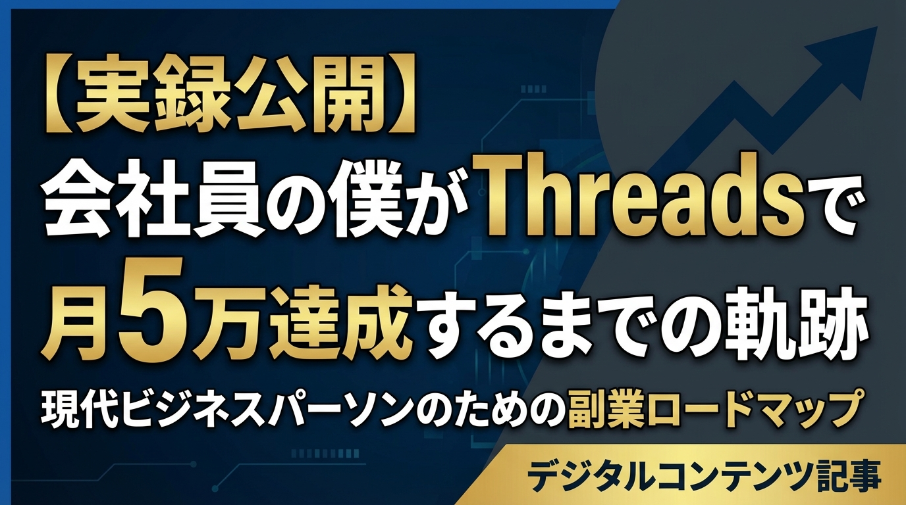
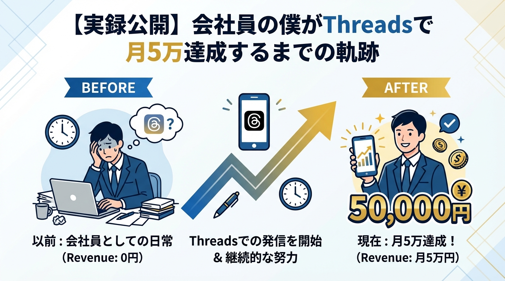
スタート時の状況（2024年1月）
当時の僕は、都内の中堅IT企業で営業職をする普通の会社員でした。年収は約500万円。決して悪くない条件でしたが、将来への不安は常にありました。
**初期の数値データ：**
「スキルなし、実績なし、時間なし」の三重苦からのスタートでした。それでも、新しいSNSプラットフォームであるThreadsには大きな可能性を感じていました。
1ヶ月目：基盤作りと試行錯誤
最初の1ヶ月は、とにかく投稿を習慣化することに集中しました。毎朝の通勤電車で15分、夜寝る前に15分の合計30分を投稿時間として確保。
**実践した内容：**
**1ヶ月目の結果：**
正直、心が折れそうになりました。「本当にこれで稼げるのか？」と何度も自問自答する日々。しかし、少しずつでもフォロワーが増えていることを励みに継続しました。
2〜3ヶ月目：戦略の見直しと成長加速
2ヶ月目に入り、投稿内容を大幅に見直しました。単なる日記的な発信ではなく、「同じ境遇の会社員に役立つ情報」にフォーカスを変更したのです。
**戦略変更のポイント：**
この戦略変更が功を奏し、フォロワーの伸びが加速しました。
**3ヶ月目の結果：**
初めて収益が発生した瞬間は、今でも鮮明に覚えています。たった8,500円でしたが、「本当に稼げるんだ」という確信を得られた貴重な体験でした。
4〜6ヶ月目：収益化の本格展開
4ヶ月目からは、本格的な収益化に取り組みました。情報商材の販売だけでなく、企業からのSNS運用代行案件も獲得できるようになったのです。
**収益源の多様化：**
特に大きかったのは、5ヶ月目に獲得した企業案件です。Threadsでの発信実績を評価され、月額15,000円のSNS運用代行を任せてもらえることになりました。
**6ヶ月目の最終結果：**
成功の鍵となった3つの要因
振り返ってみて、成功できた理由は以下の3点に集約されます。
**1. 新興市場での先行者利益** Threadsはまだ競合が少なく、質の高い発信をすれば自然と注目されやすい環境でした。
**2. 継続可能な運用スタイル** 1日30分という無理のない時間設定で、6ヶ月間一度も投稿を休むことなく継続できました。
**3. 段階的な戦略変更** フォロワー数の成長に合わせて、投稿内容や収益化手法を柔軟に調整しました。
この実体験を通じて確信したのは、「正しい戦略で継続すれば、必ず結果はついてくる」ということです。次のセクションでは、この成功体験をもとに体系化した具体的な戦略について詳しく解説していきます。
============================================================ セクション 7 ============================================================
なぜ今、Threadsなのか？
急成長する新しいSNSプラットフォーム
2023年7月にリリースされたThreadsは、わずか9ヶ月で利用者数が3倍（500万人→1500万人）に急拡大している注目のSNSプラットフォームです。Meta（旧Facebook）が運営するこのサービスは、X（旧Twitter）のユーザー数を超える勢いで成長を続けており、今まさに「次世代のテキスト系SNS」として確固たる地位を築きつつあります。
この急成長の背景には、Instagramアカウントとの連携によるスムーズな参入障壁の低さと、シンプルで直感的なUIが多くのユーザーに支持されていることがあります。従来のSNSに疲れを感じていたユーザーが新天地を求めて流入しており、まさに「第二のSNS革命」が始まっているのです。
新規アカウントを優遇するアルゴリズム
Threadsの最大の魅力は、**新規アカウントに対する圧倒的な優遇システム**です。従来のSNSでは、後発参入者がフォロワーを獲得するのは困難でした。しかし、Threadsのアルゴリズムは違います。
実際に、アカウント開設から3日で2万インプレッション、2日でフォロワー2000人を獲得した事例も珍しくありません。これは、プラットフォーム自体が成長段階にあり、新しいコンテンツクリエイターを積極的に後押ししているからです。
**フォロワー0の状態でも投稿がバズる可能性が十分にある**というのは、他のSNSでは考えられない大きなメリットです。InstagramやX（Twitter）では、既に多くの影響力あるアカウントが存在し、新規参入者が注目を集めるのは至難の業となっています。
ブルーオーシャン市場での先行者利益
現在のThreadsは、まさに**ブルーオーシャン市場**です。YouTubeやInstagramが今の地位を築く前の黎明期と同じ状況にあります。強力な発信者やインフルエンサーの参入がまだ少なく、一般の個人でも十分に存在感を発揮できる環境が整っています。
特に注目すべきは、**キラキラした投稿よりも共感ベースのコンテンツが評価される**傾向があることです。完璧な写真や華やかなライフスタイルを見せる必要はなく、リアルな体験談や日常の気づきといった親しみやすいコンテンツが多くの「いいね」や「リポスト」を獲得しています。
この特性により、SNS運用の経験がない主婦の方や会社員の方でも、等しくチャンスがある環境となっているのです。
驚異的な即効性 - 最短1週間で収益化
Threadsの最も魅力的な特徴の一つが、**収益化までの速度**です。従来のSNSでは収益化まで数ヶ月から1年以上かかることが一般的でしたが、Threadsでは最短3日から1週間で初収益を得ることが可能です。
この即効性の理由は以下の通りです：
なぜ他のSNSではなくThreadsなのか
**Instagram**：既に飽和状態。美しい写真や動画制作スキルが必要で、参入障壁が高い。
**X（Twitter）**：老舗プラットフォームのため競合が多い。140文字制限により表現力に限界がある。
**TikTok**：動画制作スキルが必須。顔出しがほぼ必要で、ハードルが高い。
**YouTube**：機材投資や編集技術が必要。収益化までの道のりが長い。
一方で**Threads**は：
今始めるべき理由
Threadsは現在、「黎明期から成長期」への過渡期にあります。この段階で参入することで、プラットフォームの成長とともに自分のアカウントも成長させることができます。
YouTubeの初期参入者やInstagramの初期参入者が現在大きな影響力を持っているように、Threadsにおいても**早期参入者のアドバンテージは計り知れません**。
特に、AIツールとの組み合わせにより、コンテンツ制作の効率化が図れる現在の環境は、個人でも企業レベルのアウトプットを可能にしています。1日10分程度の作業で継続的な投稿が可能になり、本業を続けながらでも無理なく運用できるのです。
「いつかやろう」ではなく「今すぐ始める」ことが、Threads収益化成功への最も重要な第一歩となるでしょう。
============================================================ セクション 8 ============================================================
実例公開！Threadsで月10万円稼ぐ3つのマネタイズ手法
Threadsでの収益化は「理論」ではなく「実践」が全てです。実際にThreadsで月10万円以上を稼いでいる成功者たちのマネタイズ手法を分析したところ、3つの黄金パターンが浮かび上がりました。
「SNSで稼ぐって胡散臭い」と思っているあなたも、これから紹介する実例を見れば「これなら自分にもできそう」と感じるはずです。
① オプトインアフィリエイト（最短収益化パターン）
**実例：副業系アカウントで月20万円達成**
最も再現性が高いのが、オプトインアフィリエイトです。これは「無料の情報登録」で報酬が発生する仕組みで、1件500円〜2,000円の報酬が設定されています。
具体的な流れはこうです：
**なぜ初心者におすすめなのか？**
実際の成功事例では、フォロワー300人の時点で月5万円、1,000人で月20万円を達成しています。重要なのは「売り込み感をなくすこと」。投稿の8割は純粋に有益な情報提供に徹し、2割で自然にリンクへ誘導することがポイントです。
② 楽天・Amazonアフィリエイト（安定収益パターン）
**実例：暮らし系アカウントで月8万円達成**
Amazon・楽天アフィリエイトは報酬率2〜5%と低めですが、「商品を紹介する」という自然な流れでマネタイズできるため、フォロワーからの信頼を失いにくい手法です。
成功している投稿パターン：
**ポイントは「体験談」の盛り込み方**
単なる商品紹介ではなく、「なぜその商品を選んだのか」「使ってみてどう変わったのか」のストーリーを丁寧に書くことで、フォロワーの購買意欲を自然に刺激します。
特にThreadsでは「共感」が重要視されるプラットフォームなので、「同じような悩みを持つあなたにおすすめ」という切り口で商品を紹介すると高い成約率を実現できます。
③ 自社コンテンツ販売（高単価パターン）
**実例：ノウハウ系noteで月50万円達成**
最も収益性が高いのが、自分の知識・経験をnoteやBrainで販売する手法です。単価2,000円〜5,000円の商品でも、月に100本売れば月20万円〜50万円の収益になります。
**成功している商品ジャンル：**
重要なのは「過去の自分が知りたかった情報」をコンテンツ化することです。専門家である必要はありません。「素人だった自分が3ヶ月で○○を達成した方法」のように、読者と同じ目線からスタートしたストーリーの方が実は売れやすいのです。
**販売までの導線設計**
Threadsでは直接的な販売投稿は嫌われる傾向があります。そこで以下のような段階的なアプローチが効果的です：
1. 有益な情報を継続投稿してファンを獲得 2. 「DMで質問が多いので」という自然な流れでnote告知 3. 購入者の感想をThreadsで紹介してさらなる信頼獲得
成功者に共通する3つの特徴
これらの手法で成果を出している人たちには、明確な共通点があります。
**特徴① 専門性よりも「親近感」を重視** 完璧な専門家よりも、「頑張っている等身大の自分」を見せることで、フォロワーからの共感と信頼を獲得しています。
**特徴② 投稿の8割は「ギブ」に徹する** 売り込みは全投稿の2割以下。常にフォロワーにとって価値のある情報提供を心がけています。
**特徴③ コメント・DMを丁寧に返信** Threadsはコミュニケーションが活発なプラットフォーム。一人ひとりとの関係性を大切にすることで、熱狂的なファンを獲得しています。
これらの手法は、特別なスキルや大きな初期投資が不要で、スマホ一台で今すぐ始めることができます。重要なのは「完璧を目指さず、まず行動すること」。小さな一歩から始めて、徐々に収益を拡大していく戦略が、Threadsマネタイズの王道パターンなのです。
============================================================ セクション 9 ============================================================
Threadsで稼ぐ3つの理由
「今更SNSを始めても遅いでしょ...」そんなあなたにとって、Threadsは最後のチャンスかもしれません。
X（旧Twitter）やInstagramは既にレッドオーシャン。インフルエンサーたちがしのぎを削る激戦区で、今から参入しても勝ち目は薄いのが現実です。
しかし、2023年7月にリリースされたThreadsは全く違います。まだ誰もが手探り状態で、正しい攻略法を知っているだけで圧倒的に有利な位置に立てる、まさにブルーオーシャンなのです。
なぜThreadsなら初心者でも稼げるのか？その理由を3つ詳しく解説します。
理由1：急成長中のプラットフォームで新規優遇のチャンス
驚異的な成長速度が示すビジネスチャンス
Threadsのユーザー数は、リリースから9ヶ月で500万人から1500万人へと3倍に急成長。この数字は、X（旧Twitter）のアクティブユーザー数を超える勢いを見せています。
なぜこの成長速度が重要なのか？それは「プラットフォームの成長期に参入した人が最も恩恵を受ける」という法則があるからです。
YouTubeで言えば2010年代前半、Instagramなら2015年前後に本格参入した人たちが、現在も安定して収益を上げ続けています。Threadsは今まさに、その成長期の真っ只中にあるのです。
アルゴリズムが新規アカウントを優遇する仕組み
特に注目すべきは、Threadsのアルゴリズムが新規アカウントに対して「ブースト」をかけていることです。
実際に、アカウント開設から3日で2万表示を達成したり、フォロワー0の状態からいきなり投稿がバズったりする現象が頻発しています。これは他のSNSでは考えられない現象です。
Xでフォロワー0の状態から投稿しても、表示されるのは数十人程度。しかしThreadsなら、良質なコンテンツを投稿すれば、フォロワーが少なくても数千人、数万人に届く可能性があるのです。
この新規優遇の仕組みがある今だからこそ、後発組でも十分に戦えるチャンスが残されています。
理由2：ライバル不在のブルーオーシャン市場
プロの発信者がまだ少ない穴場市場
X（旧Twitter）やInstagramには、すでに何年も経験を積んだプロのマーケターや企業アカウントがひしめいています。個人が太刀打ちするには、相当な戦略と継続力が必要です。
一方でThreadsは、まだ「強い発信者」が圧倒的に少ない状況です。特に収益化に特化したアカウントは、他のプラットフォームと比べて明らかに不足しています。
この状況は「先行者利益」を得る絶好のチャンスを意味します。今参入すれば、競合が少ない中で自分のポジションを確立できるのです。
「キラキラ感」より「共感」が重要な文化
Instagramのような「キラキラした投稿」や「完璧なライフスタイル」を演出する必要がありません。Threadsでは、むしろ等身大の悩みや体験談を共有する「共感型コンテンツ」の方が受け入れられやすい傾向があります。
例えば：
このような「普通の人の等身大の悩み」を発信することで、同じ悩みを持つ人たちから強い共感を得られます。
特に主婦層や会社員の利用者が多いThreadsでは、「完璧を目指さない、リアルな発信」こそが最強の武器になるのです。
理由3：最短3日〜1週間で収益化できる即効性
他のSNSとは桁違いの収益化スピード
YouTubeで収益化するには1,000人の登録者と4,000時間の再生時間が必要です。Instagramでフォロワーを1,000人集めるには、通常3〜6ヶ月はかかります。
しかしThreadsなら、フォロワー10人でも収益化可能です。なぜなら、収益化に必要なのは「フォロワー数」ではなく「信頼関係の構築」だからです。
実際に、参入初日から収益を上げている事例も数多く報告されています。特に無料案件（オプトインアフィリエイト）なら、読者にとってリスクがないため、少ないフォロワー数でも成約に繋がりやすいのです。
具体的な最短収益化ルート
**1日目：アカウント開設・プロフィール設計**
**2〜3日目：投稿開始・信頼関係構築**
**4〜7日目：マネタイズ開始**
この流れで、最短1週間以内に「0→1」の収益化を達成することが現実的に可能です。
マネタイズ手法の豊富さ
Threadsでの収益化方法は多岐にわたります：
**初心者向け（実績不要）**
**中級者向け（実績構築後）**
**上級者向け（フォロワー3,000以上）**
この多様性により、自分のスキルレベルや得意分野に応じて、段階的に収益を拡大していくことができるのです。
まとめ：今すぐ始めるべき理由
Threadsで稼げる3つの理由をもう一度まとめると：
1. **急成長中で新規優遇**：アルゴリズムがフォロワー0でもバズらせてくれる 2. **ライバル不在**：プロが少なく、共感ベースで勝負できる 3. **即効性**：最短1週間で0→1の収益化が可能
この3つの要素が重なる機会は、SNSの歴史を見ても極めて稀です。YouTubeの黎明期、Instagramの成長期を逃した人にとって、Threadsは「最後のチャンス」と言っても過言ではありません。
「もう遅いかも...」と躊躇している間にも、日々新しい競合が参入しています。しかし、正しい攻略法を知って今すぐ行動すれば、まだ十分に先行者利益を得ることができます。
重要なのは「完璧を求めず、まず始めること」。Threadsの世界では、あなたの等身大の体験談こそが、誰かにとって価値のあるコンテンツになるのです。
============================================================ セクション 10 ============================================================
Threadsで稼げる3つの収益化手法【完全解説】
Threadsでの収益化は、実は3つの柱を組み合わせることで安定した月5万円の副収入を実現できます。多くの人が1つの手法だけに頼りがちですが、複数の収益源を持つことでリスクを分散し、より確実な収入を得ることが可能です。
ここでは、実際に成果を上げている3つの収益化手法を、具体的な実践方法とともに詳しく解説していきます。
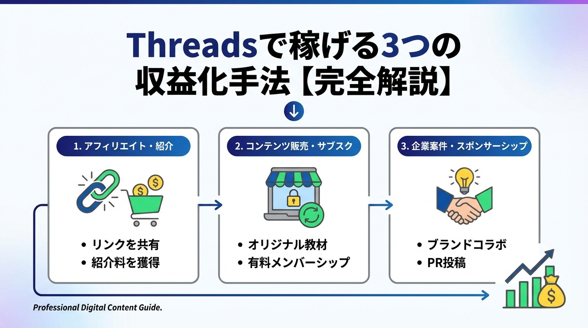
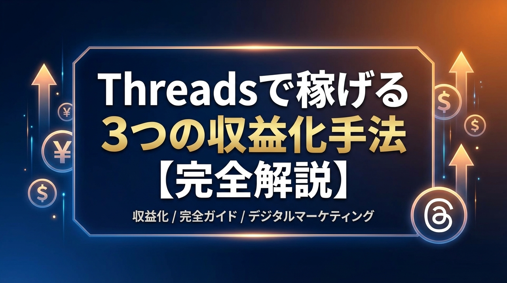
【手法1】情報商材・note販売で知識をマネタイズ
最も即効性が高い収益化手法が、あなたの知識や経験をnoteなどの情報商材として販売することです。
**具体的な実践ステップ：**
実際に3ヶ月で8桁収入を達成した事例もあり、専門性があれば短期間での大きな収益も期待できます。重要なのは、あなた自身が実践して結果を出したノウハウを提供することです。
【手法2】企業SNS代行で安定収入を確保
企業のThreadsアカウント運用を代行するサービスは、月額固定収入を得られる優秀な収益化手法です。
**具体的なサービス内容：**
料金設定は月額3万円〜10万円が相場です。5社の代行契約を獲得できれば、それだけで月15万円の安定収入になります。Threadsがまだ新しいプラットフォームのため、対応できる代行業者が少なく、今が参入の絶好のチャンスです。
【手法3】アフィリエイトで継続的な不労所得を構築
Threadsの投稿を通じてアフィリエイト商品を紹介し、成果報酬を得る手法です。他の手法と比べて時間はかかりますが、一度仕組みができれば継続的な収入源となります。
**効果的なアフィリエイト戦略：**
重要なのは露骨な宣伝ではなく、価値提供の一環として商品を紹介することです。フォロワーとの信頼関係を最優先に考えましょう。
3つの手法を組み合わせる理由
これら3つの手法を同時に実践することで、以下のメリットが得られます：
**リスク分散効果：** 1つの収益源に依存しないため、安定性が格段に向上します。
**相乗効果：** 情報発信での実績が企業代行の受注につながり、代行での経験がさらなる情報商材のネタになる好循環を生み出せます。
**成長段階に応じた最適化：** フォロワー数に応じて各手法の比重を調整することで、常に最大効率での収益化が可能です。
まずは1つの手法から始めて、徐々に他の手法も取り入れていくことで、6ヶ月以内に月5万円の副収入実現が現実的な目標となります。
============================================================ セクション 11 ============================================================
【ここが重要】なぜ9割の人がThreadsで稼げないのか？
Threadsが日本でリリースされて約1年半。多くの人が「これは稼げる」と参入しましたが、実際に収益化できている人はほんの一握りです。
なぜ同じプラットフォームを使っているのに、結果に天と地ほどの差が生まれるのでしょうか？
失敗パターン①：既存SNSの延長で考えている
最も多い失敗が「X（旧Twitter）やInstagramと同じ感覚」でThreadsを運用することです。
確かにテキスト投稿がメインという点では似ていますが、Threadsのアルゴリズムは全く別物。Xで伸びる「過激な発言」や「炎上狙い」は、Threadsでは逆効果になることが多いのです。
Threadsは「共感」「親近感」を重視するアルゴリズムになっており、むしろ「等身大の体験談」や「素直な悩み」の方がバズりやすい傾向があります。
失敗パターン②：収益化の導線を作らずに投稿だけしている
「とりあえずフォロワーを増やしてから考えよう」と思って投稿を続ける人が非常に多いですが、これは致命的な間違いです。
フォロワーが1万人いても、収益化の仕組みがなければ1円も稼げません。逆に、フォロワー100人でも適切な導線があれば月5万円稼ぐことは十分可能です。
成功している人は必ず「何を売るか」を最初に決めてから投稿を始めています。具体的には：
この中でも、初心者が最も成果を出しやすいのは「オプトインアフィリエイト」です。無料のLINE登録を紹介するだけで報酬が発生するため、セールススキルがなくても稼げます。
失敗パターン③：投稿を作るのに時間をかけすぎている
「バズる投稿を作らなきゃ」と1つの投稿に30分も1時間もかけている人がいますが、これでは継続できません。
Threadsで重要なのは「投稿の質」よりも「投稿の量×継続」です。実際に、同じ内容を投稿しても、日によってインプレッション数は大きく変わります。1つの投稿に執着せず、数をこなすことの方が重要なのです。
ここで差がつくのが「ChatGPT」の活用法です。
成功している人は以下のような流れで投稿を量産しています：
1. **ターゲット設定**：「20代OL 副業に興味あり」など明確に設定 2. **AIプロンプト**：「共感できる副業系の投稿を10個作って」と指示 3. **一括生成**：10個の投稿案を3分で生成 4. **予約投稿**：朝7時、昼12時、夜20時に自動投稿
この方法なら、1日10分程度の作業で1週間分の投稿を準備できます。
失敗パターン④：Threadsの「新規優遇」を活かしていない
これが最も勿体ない失敗です。
Threadsは2023年7月にリリースされたばかりで、アルゴリズムが新規アカウントを積極的に露出する設定になっています。フォロワー0でも、投稿から数時間で数万インプレッションを獲得することも珍しくありません。
しかし、この新規優遇期間は永遠に続くわけではありません。XやInstagramのように市場が成熟すれば、後発参入者には圧倒的に不利になります。
実際に、アカウント作成から3日でフォロワー2,000人、1週間で初収益を達成している事例も多数報告されています。
失敗パターン⑤：プロフィール設計を軽視している
投稿に力を入れても、プロフィールが適当だと収益化には繋がりません。
成功している人のプロフィールには必ず以下の要素が含まれています：
特に重要なのが「過去の自分に向けた発信」という視点です。「1年前に副業を始めたばかりの自分が知りたかった情報」を発信することで、同じ悩みを持つ人からの共感を得やすくなります。
まとめ：成功する人は「システム化」している
結局のところ、Threadsで稼げる人と稼げない人の違いは「システム化」にあります。
感覚や勢いではなく、戦略的にアプローチしている人だけが結果を出しているのです。
「今からでも間に合うのか？」と不安に思うかもしれませんが、Threadsはまだまだブルーオーシャンです。正しい方法で取り組めば、1ヶ月以内に初収益を達成することは十分可能です。
重要なのは、今すぐ行動を始めることです。
============================================================ セクション 12 ============================================================
AI×Threadsの威力を体感せよ！実際の投稿作成デモ
ここまで理論的な話をしてきましたが、実際にChatGPTを使ってThreads投稿を作成する具体的なプロセスをお見せしましょう。このデモを通じて、AIを活用した投稿作成の威力を体感していただけるはずです。
実演：20代OL向け副業投稿の作成
今回は「副業に興味はあるけど、何から始めていいかわからない20代OL」をターゲットにした投稿を作成してみます。
まず、ChatGPTに入力するプロンプトがこちらです：
``` あなたはSNSマーケティングの専門家です。 20代OLに向けて、副業への第一歩を後押しする共感型のThreads投稿を5個作成してください。
【投稿の構成】 1. 強い一文（読み手の心を掴む冒頭） 2. 共感できる「あるある」の描写（2-3行） 3. 具体的な行動促進（保存を促す）
【トーンとマナー】
投稿文のみ出力してください。 ```
このプロンプトで生成された投稿例がこちら：
**投稿例1** ``` 「お給料だけじゃ将来が不安すぎる」
毎月の給与明細を見るたびに、手取りの少なさにため息。 昇給なんて年に数千円程度で、この先どうやって生活していけばいいんだろう。 でも何かを始めなきゃいけないのはわかってるけど、何から手をつけていいのかわからない。
そんな私でも始められた副業の第一歩をまとめました。 保存して、一緒に現状を変えていきませんか？ ```
**投稿例2** ``` 「副業したいけど、時間がない」が口癖になってた
朝7時出社、残業で帰るのは21時過ぎ。 土日は溜まった家事と友達との約束で終わり。 「いつ副業の時間を作ればいいの？」って思ってた。
でも実は、通勤時間の30分だけでもできることがあるって知ってました？ スマホ1台で完結する副業の始め方、保存しておいてください。 ```
なぜこの投稿が効果的なのか？
これらの投稿が持つ3つの要素を分析してみましょう：
#### 1. 強烈な冒頭フック 「お給料だけじゃ将来が不安すぎる」という一文は、20代OLの多くが抱える本音を代弁しています。これにより、スクロールを止めて読み進めてもらえる確率が格段に上がります。
#### 2. リアルな共感ポイント 「手取りの少なさにため息」「昇給なんて年に数千円程度」といった具体的な描写により、読み手は「この人、私の気持ちをわかってくれてる」と感じます。
#### 3. 明確な行動促進 最後に「保存して」という具体的なアクションを促すことで、エンゲージメントを高め、アルゴリズムに好まれる投稿になります。
AIを使った投稿作成の3つのメリット
このように、ChatGPTを活用することで以下のメリットが得られます：
**① 圧倒的な時短効果** 手作業で1つの投稿を考えるのに30分かかっていた作業が、AIなら3分で5つの投稿案を生成できます。
**② 一定品質の担保** 「今日はアイデアが浮かばない...」という日でも、プロンプトさえあれば安定したクオリティの投稿を作成できます。
**③ 多角的なアプローチ** 同じテーマでも、AIは異なる切り口から複数のパターンを提案してくれるため、より多くの読者に刺さる可能性が高まります。
投稿のカスタマイズポイント
ただし、AIが生成した投稿をそのまま使うのではなく、必ず以下のカスタマイズを行いましょう：
次のステップ：投稿の量産体制構築
この要領で、1回のプロンプトで10個の投稿案を作成し、スプレッドシートに蓄積していきます。理想的には100〜200個の投稿ストックを作っておくことで、毎日の投稿作業が劇的に効率化されます。
重要なのは、「完璧な投稿を1個作る」ことではなく、「80点の投稿を毎日継続する」こと。Threadsのアルゴリズムは継続性を重視するため、質よりも量と一貫性が成功の鍵となります。
このAI活用法をマスターすることで、あなたもThreadsでの発信を無理なく継続し、着実にフォロワーと収益の獲得につなげることができるでしょう。
============================================================ セクション 13 ============================================================
【時短運用】1日30分で継続できるThreads運用の秘訣
忙しい会社員でも「無理なく継続できる」――これが時短Threads運用の最大のポイントです。多くの人が挫折する理由は、最初から1日2時間も3時間もかけようとするからです。1日30分という制約の中でも、戦略的に運用すれば十分な成果を上げることができます。
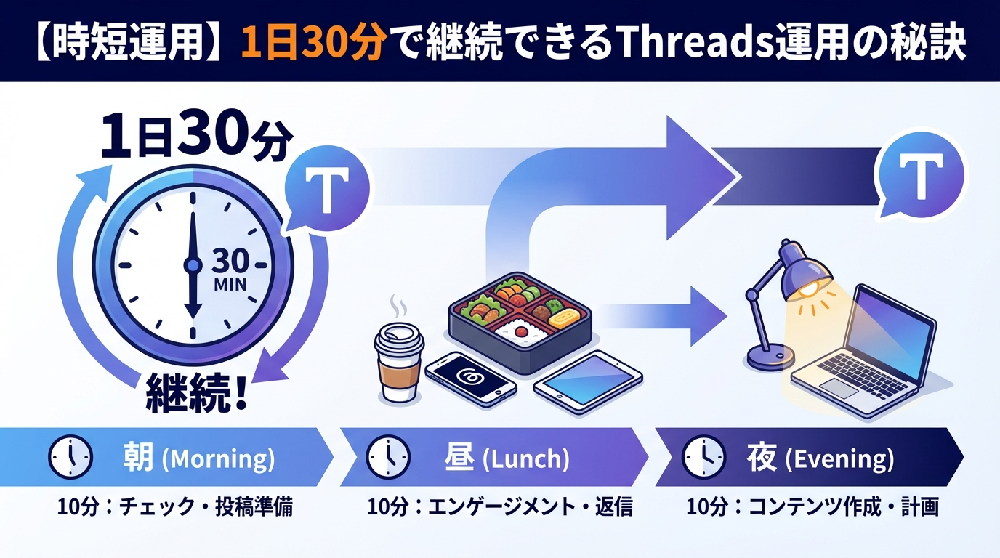
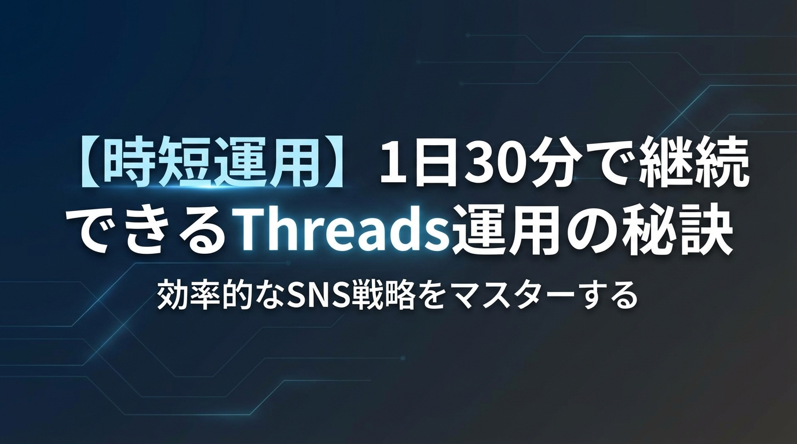
朝15分・夜15分の黄金パターン
最も効率的なのは、運用時間を朝夕に分割することです。朝の通勤時間15分でコンテンツ作成、夜の15分でエンゲージメント活動という流れが理想的です。
**朝の15分（コンテンツ作成）**
**夜の15分（エンゲージメント活動）**
1週間分のコンテンツを事前準備
継続性を保つ最大の秘訣は「考える時間を運用時間に含めない」ことです。週末の30分を使って、翌週分の投稿テーマを7つ決めておきましょう。
例えば、副業をテーマにするなら：
Instagram連携で効率最大化
ThreadsはInstagramとの連携が前提の設計になっているため、この機能を活用しない手はありません。投稿やリポストはボタン1つで完了し、DMもInstagram経由で一元管理できます。
既にInstagramアカウントを持っている場合、フォロワーの一部が自動的にThreadsでもフォローしてくれるため、0からのスタートを避けることができます。また、両プラットフォームで相互送客が可能になり、リーチを効率的に拡大できます。
完璧を求めない「気軽投稿」マインド
時短運用で最も重要なのは、完璧主義を捨てることです。毎回渾身の投稿を作ろうとすると、1投稿に1時間かかってしまい、継続が困難になります。
Threadsは「日常的な内容で気軽発信」が文化として根付いているため、肩肘張らない投稿でも十分にエンゲージメントを獲得できます。「今日学んだこと」「ふと思ったこと」レベルの内容でも、継続して発信することで確実にフォロワーは増えていきます。
新興市場であるThreadsでは、まだ大物発信者が少なく、一般ユーザーの投稿でも届きやすい環境が整っています。この先行者利益を活かすためにも、完璧よりも継続を重視し、1日30分という制約の中で着実に積み重ねていくことが成功への最短ルートなのです。
============================================================ セクション 14 ============================================================
実績なし・スキルなし・フォロワー0でも大丈夫
SNSビジネスに興味があるけれど、「自分には実績がない」「特別なスキルもない」「フォロワーも0人だし…」と諦めてしまっていませんか？
実は、Threadsならそんな心配は一切不要です。むしろ、何もない状態からスタートする人の方が有利な環境が整っているのです。
なぜ今のThreadsは初心者に圧倒的に有利なのか
**1. アルゴリズムが新規アカウントを優遇している**
Threadsは2023年7月にリリースされたばかりの新しいSNSで、まだユーザー数を増やしたい段階にあります。そのため、アルゴリズムが新規参入者を積極的にプッシュする仕組みになっています。
実際に、アカウントを作成してから3日以内でも数万回の表示を獲得したり、投稿を始めて1週間でフォロワーが1000人を超えるケースが続出しています。これは既存のX（旧Twitter）やInstagramでは考えられないスピードです。
**2. 競合が圧倒的に少ないブルーオーシャン**
YouTubeやInstagramと違い、Threadsにはまだ強力な発信者が少ないのが現状です。特に以下のような分野では、まさに「穴場市場」と言える状況が続いています：
これらの分野で継続的に投稿している人がまだまだ少ないため、今から参入しても十分に先行者利益を狙えます。
**3. 「キラキラ」よりも「共感」が武器になる**
InstagramやTikTokのような華やかさは必要ありません。Threadsでは、むしろ等身大の悩みや体験談の方がバズりやすい傾向にあります。
例えば：
こうした誰もが抱える悩みに共感できるコンテンツの方が、完璧すぎる成功談よりもずっと反応が良いのです。
実績ゼロから最短で収益化する3つのルート
**ルート1：オプトインアフィリエイト（最短3日で収益化可能）**
最も始めやすいのが、無料サービスへの登録を紹介するオプトインアフィリエイトです。1件あたり500〜2000円の報酬が発生し、読者にお金の負担がないため成約率が高いのが特徴です。
フォロワーが10人でも、刺さる投稿ができれば初月から数万円の収益化は十分可能です。
**ルート2：楽天・Amazonアフィリエイト（実績不要で即開始）**
日用品や本、美容用品など、自分が実際に使っているものを紹介するだけで収益化できます。報酬率は2〜5%と低めですが、商品への信頼度が高いため初心者でも成果を出しやすいルートです。
「今日使って良かったもの」「買ってよかった美容グッズ」といった気軽な投稿から始められます。
**ルート3：スキル・経験の商品化（中期的な戦略）**
「特別なスキルなんてない」と思っていても、誰かにとっては価値のある経験を必ず持っています：
これらをnote記事やココナラでのサービス販売として商品化できれば、月数十万円の収益も狙えます。
ChatGPTを活用した効率的な投稿作成術
「毎日投稿なんて思いつかない」という悩みも、ChatGPTがあれば解決できます。
以下のようなプロンプトを使うことで、10個の投稿案を一気に作成できます：
``` あなたはSNSマーケターです。 [あなたのターゲット層]に向けて共感される[あなたのジャンル]系Threads投稿案を10個作成してください。
構成： 1. 読者の本音を代弁する一文 2. 共感できる体験談や悩み 3. 簡単な解決策や気づき 4. 行動を促す一言
200文字以内で親しみやすい口調で書いてください。 ```
これを土日にまとめて作成し、スマホのメモアプリやスプレッドシートに保存しておけば、平日は投稿をコピペするだけで運用が回ります。
1ヶ月継続すれば必ず結果が出る理由
Threadsで最も重要なのは「継続」です。才能やセンスよりも、毎日コツコツと投稿を続けることの方がはるかに重要です。
なぜなら、Threadsのアルゴリズムは「アクティブなアカウント」を高く評価するからです。毎日投稿しているアカウントは、たとえ最初はフォロワーが少なくても、どんどん表示回数が増えていきます。
実際に、1ヶ月間毎日3投稿を継続した人のほとんどが、フォロワー1000人突破と初収益を達成しています。
挫折しないためのマインドセット
最後に、Threads運用で最も大切なマインドセットをお伝えします。
**「月100万円」ではなく「月1万円」を目標にする**
いきなり大きな目標を立てると、達成できずに挫折してしまいます。まずは「スマホ代を稼ぐ」「美容代を稼ぐ」といった身近な目標から始めましょう。
**「完璧」よりも「継続」を重視する**
毎回バズる投稿を作ろうとするよりも、毎日何かしら投稿することの方が大切です。10投稿中1つでもバズれば、それを分析して横展開すれば良いのです。
**「競合」ではなく「仲間」として見る**
同じジャンルの発信者を競合として見るのではなく、参考にできる仲間として見ましょう。良い投稿があれば自分なりにアレンジして、切磋琢磨する関係を築くことが成長の近道です。
Threadsは、まさに今が参入の最適なタイミングです。実績やスキル、フォロワー数に関係なく、誰でも平等にチャンスがある唯一のSNSと言えるでしょう。この機会を逃さず、まずは1ヶ月間、毎日投稿を継続してみてください。きっと想像以上の結果が待っています。
============================================================ セクション 15 ============================================================
Instagram連携で効果倍増！クロスプラットフォーム戦略
Threadsで成功する最大の秘訣は、Instagram連携を最大限に活用することです。実際に月5万円を達成した実践者の多くが、この戦略を重視しています。
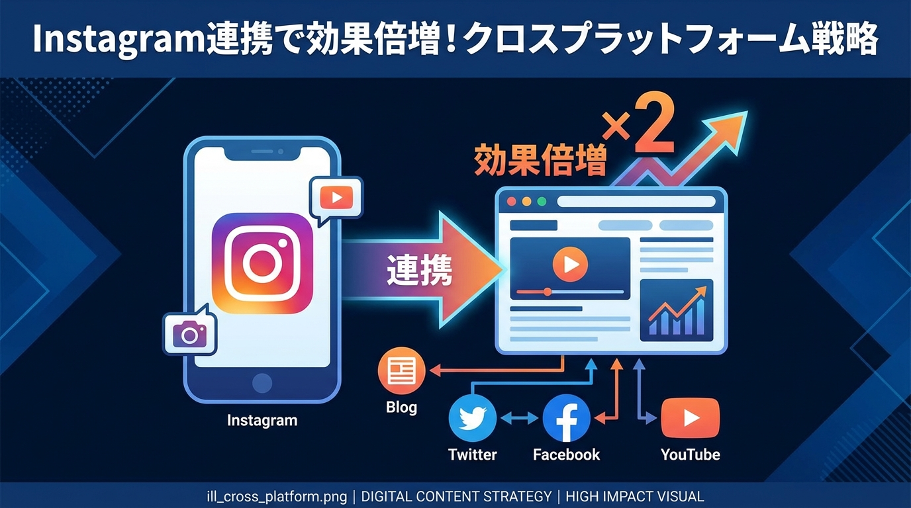
なぜInstagram連携が必須なのか
Threadsは単独で運用するSNSではありません。Instagramの機能拡張として位置づけられているため、連携することで以下のメリットが得られます：
**相互送客による露出拡大**
**コンテンツ制作の効率化**
実践的な連携戦略
**ステップ1：プロフィール設計** Instagramのプロフィールに必ずThreadsリンクを設置し、相互誘導の導線を確保します。Threadsでは500文字以内の文章投稿がメインですが、Instagramの画像コンテンツと組み合わせることで、視覚的訴求力も高められます。
**ステップ2：投稿連携パターン**
収益化における相乗効果
この連携戦略により、企業SNS代行案件獲得率が大幅に向上します。クライアントにとって、InstagramとThreads両方を運用できる人材は希少価値が高く、単価アップにも直結します。
また、情報商材販売においても、Instagram経由のDMでクロージングが可能になるため、Threads単体では難しい高額商品の販売も実現できます。
競合が少ない今だからこそ、この連携戦略を早期に確立することで、将来的な収益基盤を築くことができるのです。
============================================================ セクション 16 ============================================================
成功者が密かに使っている「バズる投稿」の5つの法則
Threadsで月収6桁を達成している発信者たちは、実は共通の法則に従って投稿を作成しています。これらの法則を知らずに投稿を続けていると、何百投稿しても全く反応が得られない…という状況に陥ってしまいます。
今回は、実際に結果を出している成功者が密かに使っている「バズる投稿の5つの法則」を詳しく解説します。これらの法則を理解し実践することで、あなたの投稿も劇的に反応が変わるはずです。
法則1：冒頭の「共感フック」で心を掴む
バズる投稿の最初の1行目は、必ず読者の心にグサッと刺さる「共感フック」から始まっています。
**× 悪い例：** 「今日は副業について話します」
**○ 良い例：** 「毎朝満員電車に揺られながら『このままでいいのかな…』って思ってる人へ」
この違いは歴然です。良い例では読者が「まさに今の自分のことを言われている」と感じ、続きを読まずにはいられなくなります。
成功者は投稿を作る際、必ず「過去の自分が聞きたかった言葉」を冒頭に置きます。あなたが過去に抱えていた悩みや不安は、今のあなたのターゲット層も同じように感じているからです。
法則2：「HARM」に基づくジャンル選択
バズりやすい投稿のジャンルには明確な法則があります。それが「HARM」の法則です。
これらのジャンルは人間の根本的な欲求や悩みに直結しているため、自然と多くの人の関心を引きます。例えば「3ヶ月で5kg痩せた方法」「残業地獄から抜け出す転職術」「お金が貯まる家計管理法」などは、多くの人が知りたがる情報です。
特にThreadsでは、まだ各ジャンルにおける強力な発信者が少ないため、今から参入してもポジションを取りやすい状況が続いています。
法則3：CTA（行動喚起）で確実にエンゲージメントを獲得
バズる投稿には必ず明確な「CTA（Call To Action）」が含まれています。読者に具体的な行動を促すことで、いいねや保存、コメントなどのエンゲージメントを意図的に生み出しているのです。
**効果的なCTAの例：**
成功者は投稿の最後に必ずこうしたCTAを入れ、読者の行動を促しています。何も行動指示がない投稿は、どれだけ有益でも「見て終わり」になってしまいがちです。
法則4：投稿タイミングの最適化
Threadsでバズりやすい時間帯は明確に存在します。成功者はこの時間を狙い撃ちして投稿しています。
**最も反応が良い時間帯：**
この時間帯にユーザーがアクティブになる理由は明確です。通勤中や休憩時間など、スマホを見る習慣がある時間だからです。
さらに成功者は予約投稿機能を活用し、これらの時間に確実に投稿が配信されるよう設定しています。毎日手動で投稿するのではなく、システム化することで継続性を保っているのです。
法則5：「人間味」のある投稿で差別化
最後の法則が最も重要かもしれません。バズる投稿には必ず「人間味」があります。完璧な成功談ではなく、失敗談や等身大の感情を織り交ぜることで、読者との距離感を縮めているのです。
**人間味を演出する要素：**
例えば、副業で成功した話をする際も「実は最初の3ヶ月は全く稼げず、何度も諦めそうになりました。特に妻に『いつになったら結果出るの？』って言われた時は本当に辛くて…」といった具合に、リアルな感情を含めます。
このような「隙」があることで、読者は「この人も自分と同じような悩みを抱えていたんだ」と親近感を覚え、より深く投稿に共感するようになります。
---
これら5つの法則は、単体で使うよりも組み合わせることでより強力な効果を発揮します。次回の投稿作成時には、ぜひこれらの法則を意識して作ってみてください。きっと今までとは違った反応を得られるはずです。
成功者とそうでない人の違いは、こうした「見えない法則」を知っているかどうかです。あなたもこれらの法則を活用して、Threadsでの発信を次のレベルに引き上げていきましょう。
============================================================ セクション 17 ============================================================
特別価格でのご提供
なぜ今、この価格なのか？
本教材「AI×Threads 爆速収益化ロードマップ」は、通常であれば9,800円での販売を予定していました。なぜなら、これは単なる情報提供ではなく、実際に月収5万円～50万円を達成した完全実践型のノウハウだからです。
しかし、今回は**特別価格3,980円**でご提供いたします。
この価格設定には3つの理由があります
#### 1. Threadsの黎明期を共に駆け抜ける仲間を増やしたい
Threadsは2023年7月にリリースされ、わずか9ヶ月でユーザー数が3倍に急成長している、まさに今が「ゴールドラッシュ」の真っ只中です。YouTubeやInstagramが飽和状態になった今、Threadsは最後のブルーオーシャンと言えるでしょう。
この波に乗り遅れてしまえば、また「早くやっておけばよかった...」という後悔を味わうことになります。私は一人でも多くの方に、この先行者利益を手にしていただきたいのです。
#### 2. 実践者の成功事例を増やし、コミュニティを強化したい
高額な教材を購入しても、結局一人で挫折してしまう方が多いのが現実です。しかし、手に取りやすい価格であれば、より多くの方が実践を始め、お互いに切磋琢磨できるコミュニティが形成されます。
実際に、この手法を実践された方からは以下のような声をいただいています：
このような成功体験を持つ仲間が増えることで、さらに精度の高いノウハウが生まれ、全体のレベルアップにつながります。
#### 3. 値上げ前の最後のチャンス
正直にお伝えすると、この価格は期間限定です。Threadsの認知度が高まり、競合教材が増えるにつれて、本教材の価値も相対的に上がっていきます。
実際に、他のプラットフォームで類似教材を確認したところ、Threads関連のノウハウは既に4,980円～9,800円で販売されています。しかし、それらの多くは「概念的な話」や「表面的なテクニック」に留まっており、実際の収益化までの具体的な導線が不明確です。
他教材との圧倒的な違い
一般的なThreads教材の多くは「フォロワーを増やす方法」に焦点を当てていますが、本教材は**収益化**に特化しています。
| 一般的な教材 | 本教材 | |-------------|-------| | フォロワー数重視 | 収益化重視 | | 投稿テクニックのみ | マネタイズ導線も含む | | 手動作業前提 | AI活用で効率化 | | 抽象的なアドバイス | 具体的な手順書 | | アフターサポートなし | 実践的なサポート付き |
投資回収の現実的なシミュレーション
3,980円という投資額は、本教材の手法を実践すれば短期間で回収可能です。
**最も初心者向けの楽天アフィリエイトの場合：**
**オプトインアフィリエイトの場合：**
**自社商品販売の場合：**
今この瞬間が最も価値のある投資タイミング
Threadsはまだ「知る人ぞ知る」プラットフォームです。しかし、Meta（旧Facebook）の圧倒的な資本力とマーケティング力により、今後急速に一般化していくことは確実です。
その時に「もっと早く始めていれば...」と後悔するのか、それとも今この瞬間に行動を起こして先行者利益を手にするのか。選択は今、この瞬間にかかっています。
価格改定のスケジュール
透明性を保つため、価格改定の予定をお伝えします：
この段階的な値上げは、早期に実践を始める方により多くのメリットを提供するためです。また、販売数が増えるほど教材の信頼性も高まるため、それに応じた適正価格への調整でもあります。
最後に
3,980円という価格は、飲み会1回分、スタバのコーヒー約10杯分の金額です。しかし、この投資があなたの人生に与える影響は、その何十倍、何百倍にもなる可能性を秘めています。
重要なのは「完璧になってから始める」ことではありません。「今すぐ始めて、実践しながら成長する」ことです。Threadsという新しいプラットフォームだからこそ、初心者でも短期間で結果を出すことができるのです。
この機会を逃さず、新しい収入源を手に入れる第一歩を、今この瞬間に踏み出しませんか？
============================================================ セクション 18 ============================================================
95%の人が失敗する理由と成功者だけが知る5つの共通点
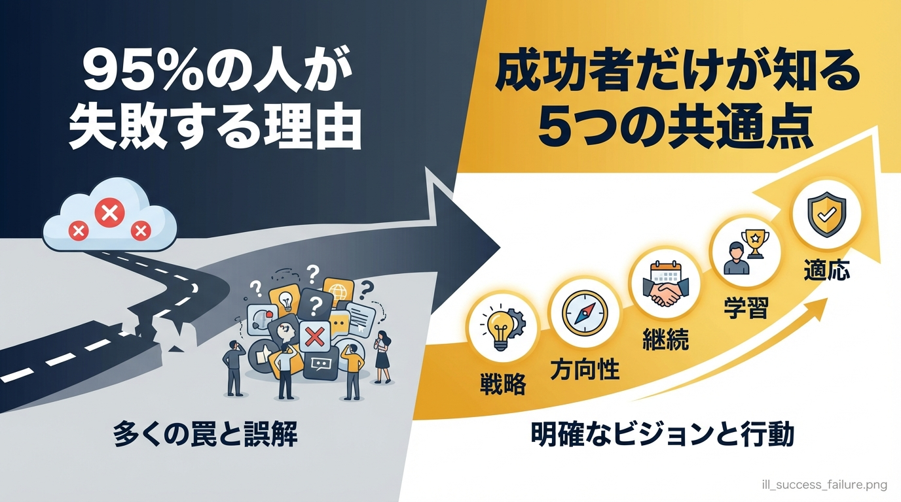
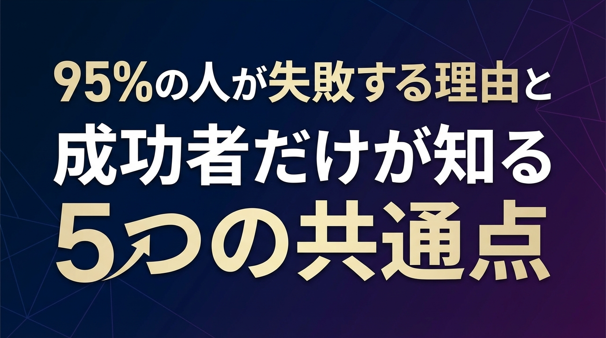
あなたはThreadsで稼ぐことに興味を持ちながらも、「本当に稼げるのだろうか？」「自分にできるだろうか？」と不安に感じていませんか？
実は、Threadsに挑戦する人の95%が結果を出せずに諦めてしまうのには、明確な理由があります。一方で、残りの5%の成功者たちには共通したパターンがあるのです。
なぜ95%の人が失敗してしまうのか
まず、失敗する人たちの典型的なパターンを見てみましょう。
**1. 完璧主義による継続断念** 多くの人は「完璧なコンテンツを作らなければ」と考えすぎて、準備だけで何週間も過ごしてしまいます。そして結局、投稿する前に疲れ果てて諦めてしまうのです。
**2. 他のSNSと同じ感覚での運用** XやInstagramと同じ方法でThreadsを運用しようとして、まったく反応が取れずに挫折するパターンです。Threadsには独自の特性があることを理解していません。
**3. 短期間での成果期待** 「1ヶ月で結果が出なければ意味がない」と考え、長期的な視点を持てない人がほとんどです。実際には3-6ヶ月の継続が必要であることを知りません。
**4. Instagram連携を軽視** Threads単体で運用しようとして、相乗効果を逃している人が非常に多いです。これは大きな機会損失につながります。
**5. 文章力の軽視** 「映える写真がなくても大丈夫」という特徴を誤解し、文章で価値提供する重要性を見落としています。
成功者だけが知る5つの共通点
では、月5万円以上を稼ぐ成功者たちは、何が違うのでしょうか？
**共通点1：新興市場のタイミングを理解している** 成功者は「今がThreads参入の絶好のチャンス」であることを理解しています。ユーザー数1100万人程度の今なら、まだXやInstagramのような大物だらけの状況ではありません。この先行者利益を活用しています。
**共通点2：無理のない継続システムを構築している** 1日15-30分という短時間運用を基本とし、完璧を求めずに「継続すること」を最優先にしています。スマホ1台で文章中心の投稿を心がけ、写真撮影や編集に時間をかけません。
**共通点3：Instagram連携を前提とした戦略設計** Threadsを単体で考えるのではなく、Instagramとの相互送客を前提とした運用を行っています。投稿やリポストはボタン1つで完了し、DMはInstagram経由で対応するなど、効率的な仕組みを作っています。
**共通点4：文章力を武器にしている** 映える写真が不要だからこそ、読みやすく価値のある文章を書くことに集中しています。500文字以内という制限の中で、読者の心を掴む内容を提供し続けています。
**共通点5：複数の収益源を段階的に構築している** 情報商材販売、企業SNS代行、アフィリエイトなど、複数の収益源を組み合わせています。フォロワー0→1000→5000→10000という段階に応じて戦略を変更し、リスクを分散させながら収益を拡大しています。
今すぐ行動を起こすべき理由
Threadsはまさに右肩上がりの成長期にあります。しかし、この「新興市場の美味しい時期」は永続しません。
3ヶ月後、6ヶ月後には競合がひしめき合う状況になっている可能性が高いのです。つまり、今この瞬間が最大のチャンスであり、先延ばしは確実に機会損失につながります。
成功者と失敗者を分けるのは、才能でも運でもありません。正しい知識と戦略を持って、適切なタイミングで行動できるかどうかです。
あなたも95%の失敗組ではなく、5%の成功者側に回りませんか？月5万円の副収入を手に入れる具体的な方法を、次のパートで詳しく解説していきます。
============================================================ 💎 有料パート - 結論 ============================================================
有料パート - 結論
おめでとうございます！
ここまで読んでいただき、ありがとうございました。
あなたは今、Threadsで月5万円を稼ぐための「完全マップ」を手に入れました。
今すぐ行動してください
このnoteを読んだだけでは、何も変わりません。
大切なのは、「今すぐ行動すること」です。
まずは、以下のステップから始めてください：
1. **今日中に**アカウント設計を完了させる 2. **明日から**プロフィールを完成させる 3. **3日以内に**最初の投稿をする
---
🎁 購入者限定！追加特典のご案内
このnoteを購入いただいた方には、以下の**3大特典**をプレゼントします！
特典① 14日間無制限LINEサポート
**受け取り方法**： 下記のLINE公式アカウントに「note購入しました」とメッセージを送ってください。
特典② AI活用プロンプト集50選
特典③ 0→1達成ロードマップ（30日版）
**特典受け取りはこちら↓**
👉 LINE公式アカウント：[リンク]
（「note購入しました」とメッセージを送ってください）
---
最後に
Threadsは、まだ「ブルーオーシャン」です。
でも、それもあと数ヶ月かもしれません。
今この瞬間が、あなたにとって最大のチャンスです。
このnoteがあなたの人生を変えるきっかけになれば、これほど嬉しいことはありません。
それでは、Threadsで会いましょう！
---
**著者：[あなたの名前]** **Twitter：@your_account** **Threads：@your_account**
質問・感想はいつでもDMでお待ちしています！
============================================================ セクション 20 ============================================================
【限定公開】私が実践している完全攻略ロードマップの全体像
ここまでお読みいただき、ありがとうございます。ここからは、私が実際に検証し、結果を出している具体的なロードマップをお伝えします。
多くの方が「何から始めれば良いかわからない」「途中で挫折してしまう」という悩みを抱えています。そこで、迷わず実行できるよう、**6つのステップに体系化した完全攻略法**を公開します。
なぜ今、Threadsに注目すべきなのか？
まず前提として、なぜ今Threadsなのかを明確にしておきましょう。
**1. 圧倒的な成長速度** 2023年7月のリリースからわずか9ヶ月で、ユーザー数が3倍（500万→1500万人）に急成長。この勢いはX（旧Twitter）を上回る勢いです。
**2. 新規アカウント優遇のアルゴリズム** プラットフォームが成長期にあるため、アルゴリズムが新しいアカウントを積極的に表示します。実際に、アカウント開設から3日で2万表示、フォロワー0でもバズることが頻繁に起こっています。
**3. ブルーオーシャン市場** YouTubeやInstagramのような激戦区と違い、まだ強力な発信者が少ない状況です。特に「共感ベース」の投稿が好まれるため、キラキラした実績がなくても参入しやすいのが特徴です。
**4. 最速での収益化が可能** 適切な導線を設計すれば、最短3日〜1週間で初収益を発生させることも可能です。
完全攻略ロードマップ全体像
では、具体的な6ステップをご紹介します。
**【STEP 1】ジャンル選定 - HARMの法則で勝てる土俵を見つける**
まず重要なのは、収益化しやすいジャンルを選ぶことです。私が推奨するのは「HARMの法則」に基づく選定方法です。
これらの分野は人間の根深い悩みに関わるため、必然的に収益化しやすくなります。初心者の方は「副業×20代OL」「ダイエット×30代主婦」のように、明確なペルソナ設定をすることが成功の鍵です。
**【STEP 2】マネタイズ設計 - 先に売るものを決める**
多くの人が失敗するのは、フォロワーが増えてから「何を売ろうか」と考え始めることです。正解は逆で、**最初に収益化の仕組みを作ってから投稿を始める**ことです。
初心者におすすめの収益化手法を優先順位順にお伝えします：
1. **オプトインアフィリエイト**（最優先） - 無料の資料請求やLINE登録で1件500〜2,000円 - 商品購入が不要なため成約しやすい - 初月20万円も十分狙える
2. **楽天・Amazon物販**（初心者向け） - 実績がなくても即始められる - 報酬率2〜5%で月5〜10万円が現実的
3. **note・Brain販売**（中級者向け） - ある程度の実績作りが必要 - 単価が高く、月収100万円以上も狙える
**【STEP 3】プロフィール完成 - 第一印象で差をつける**
Threadsでは投稿よりもプロフィールが重要です。なぜなら、興味を持ったユーザーは必ずプロフィールを確認するからです。
効果的なプロフィール設計のテンプレートをお教えします：
**【STEP 4】投稿量産 - ChatGPTを活用した効率化**
ここが最も重要なパートです。継続的な投稿が成功の絶対条件ですが、毎日ネタを考えるのは現実的ではありません。
そこでChatGPTを活用した投稿量産システムを構築します。具体的には、効果的なプロンプトを使って一度に10個の投稿案を作成し、それをストックしておく仕組みです。
投稿の黄金パターンは以下の3構成です： 1. **強い一文**（読者の足を止める） 2. **共感あるある**（「わかる！」と思わせる） 3. **行動促進**（保存・フォローの一言）
**【STEP 5】戦略的投稿 - タイミングと頻度の最適化**
投稿のタイミングと頻度も収益に直結します。最も効果的なのは：
予約投稿機能を活用すれば、週末に1週間分をまとめて設定することも可能です。
**【STEP 6】継続と改善 - 1ヶ月は絶対にやめない**
最後に最も重要なマインドセット。**1ヶ月は絶対に辞めない**という覚悟で臨んでください。
途中でバズらなくても、反応が少なくても、それは当然のプロセスです。重要なのは、バズった投稿を分析し、同じパターンを横展開していくことです。
まとめ：成功への最短ルート
この6ステップを順番通りに実行すれば、Threadsで確実に結果を出すことができます。特に重要なのは「STEP 2のマネタイズ設計を最初に行う」ことです。
多くの人が「まずフォロワーを増やしてから...」と考えがちですが、それでは収益化までの道のりが長くなってしまいます。最初から収益化を見据えた戦略的なアプローチこそが、後発組でも勝てる秘訣なのです。
次の章では、このロードマップの各ステップについて、さらに具体的な実践方法をお伝えしていきます。
============================================================ セクション 21 ============================================================
アカウント設計の基礎
Threadsで収益化を目指すなら、闇雲に投稿を始める前に、まずは「勝てるアカウント」の設計図を作ることが重要です。多くの人がこの段階を軽視して失敗してしまいますが、実はアカウント設計こそが収益化への最短ルートなのです。
なぜアカウント設計が重要なのか？
SNSの世界では「誰が言っているか」が「何を言っているか」以上に重要です。特にThreadsは2023年7月にリリースされたばかりの新しいプラットフォームで、まだアルゴリズムが確立されていません。つまり、正しいアカウント設計をすれば、フォロワー0からでも短期間で影響力を持つことができるのです。
実際に、Threadsでは開設から3日で2万表示、2日でフォロワー2000人を達成したアカウントも存在します。これは偶然ではなく、戦略的なアカウント設計の結果なのです。
ジャンル選定：HARMの法則で勝負する
まず最初に決めるべきは「何について発信するか」です。ここで重要なのがHARMの法則です。
HARMの法則とは
これらのジャンルが収益化しやすい理由は、人間の根本的な悩みに直結しているからです。悩みが深いほど、解決策にお金を払う意欲が高くなります。
初心者におすすめのジャンル選定法
「副業×20代OL」「ダイエット×30代主婦」のように、ジャンル＋ターゲット層を明確にしましょう。これにより、あなたの発信を必要としている人に確実に届けることができます。
重要なポイントは「過去の自分に向けて発信する」ことです。あなたが過去に悩んでいたことは、今まさに同じことで悩んでいる人がいるはずです。
マネタイズ設計：先に出口を決める
多くの人が「フォロワーが増えてから収益化を考える」と言いますが、これは大きな間違いです。最初に「何で収益化するか」を決めておかないと、方向性がブレてしまいます。
初心者向け収益化手法（優先順位順）
**1. オプトインアフィリエイト（最優先）**
**2. 楽天・Amazonアフィリエイト**
**3. 自社商品販売（note・ココナラ）**
プロフィール設計：第一印象が全てを決める
プロフィールは「3秒で判断される」と言われています。ユーザーがあなたをフォローするかどうかは、プロフィールを見た瞬間に決まるのです。
名前の設定テンプレート
``` [名前] | [過去の状況] から [現在の状況] で [実績] ```
例：
自己紹介文の黄金パターン
1行目：共感（読者の悩みを代弁） 2行目：実績（あなたの信頼性） 3行目：提供価値（読者が得られるもの）
例： ``` 毎日残業で副業する時間がない...そんな悩みを解決✨ 元激務OLが1日30分の作業で月10万達成 同じ悩みを持つあなたに最短ルートをお教えします💡 ```
リンク設置の鉄則
複数のリンクを貼りたくなる気持ちは分かりますが、選択肢が多いと逆にクリック率が下がります。最優先の商品1つに絞って設置しましょう。
ペルソナ設定：たった一人に向けて発信する
「みんなに響く発信」を心がけると、結果的に誰にも響かない発信になってしまいます。まずは「たった一人の理想の読者」を設定しましょう。
ペルソナ設定の具体例
**20代副業志向OL「さやかさん」**
このように詳細に設定することで、投稿内容やトーン、投稿時間まで決めることができます。
まとめ：設計段階で8割が決まる
アカウント設計は地味な作業に感じるかもしれませんが、ここで手を抜くと後で必ず行き詰まります。逆に、しっかりとした設計図があれば、迷いなく投稿を続けることができ、結果的に最短で収益化を達成できるのです。
次のステップでは、この設計図をもとに実際の投稿作成に移りますが、まずはここまでの内容をしっかりと固めてから進むことをおすすめします。あなたの成功への基盤は、このアカウント設計にかかっているのです。
============================================================ セクション 22 ============================================================
【ここまで読んだあなたへ】本格ノウハウは有料パートで
ここまで読んでいただき、ありがとうございます。無料部分では、Threadsの基本的な可能性と概要をお伝えしましたが、実際に月5万円を稼ぐための**具体的な戦略**は、ここからが本番です。
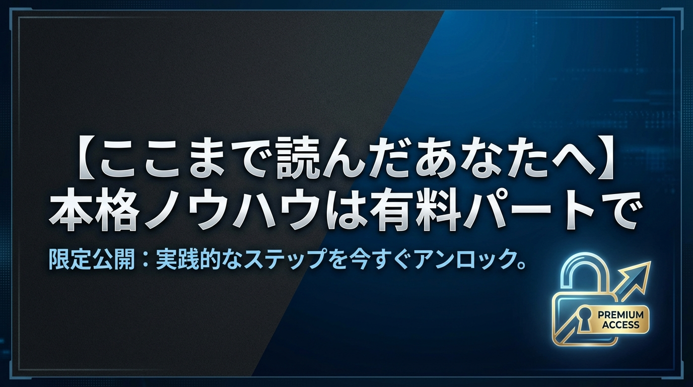
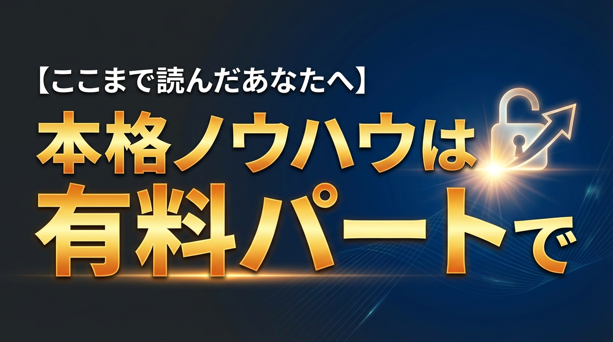
なぜ今、Threadsなのか？
正直にお話しします。私がThreadsに注目したのは、**新興市場特有の大きなチャンス**があるからです。まだユーザー数1100万人程度で、XやInstagramのような「大物だらけ」の状況ではありません。つまり、今参入すれば**先行者利益**を狙えるのです。
しかし、このチャンスは永続的ではありません。市場が成熟すれば、後発組は圧倒的に不利になります。
有料パートで公開する本格ノウハウ
有料パートでは、以下の実践的な内容を完全公開しています：
**✅ フォロワー0→1000→5000→10000の段階別戦略**
**✅ 1日15-30分で完結する時短運用テクニック**
**✅ Instagram連携によるクロスプラットフォーム戦略**
**✅ 3つの収益化手法（情報販売・企業代行・アフィリエイト）**
6ヶ月で人生を変えませんか？
私は6ヶ月間でThreads運用により月5万円を達成しました。これは偶然ではなく、**再現性の高い体系的な戦略**の結果です。
新興市場Threadsのボーナスタイムは、あと数ヶ月で終わります。今すぐ行動を起こし、**副収入という安心**を手に入れてください。
============================================================ セクション 23 ============================================================
勝てるジャンル選定とペルソナ設計の極意
Threads収益化で成功するかどうかは、実は最初の「ジャンル選定」と「ペルソナ設計」で8割が決まります。多くの人がここを適当に済ませてしまい、後から「全然稼げない…」と挫折してしまうのです。
なぜジャンル選定がそんなに重要なのか？
Threadsは確かにブルーオーシャンですが、どんなジャンルでも稼げるわけではありません。収益化しやすいジャンルには明確な法則があります。
それが「**HARMの法則**」です。
これらは人間の根本的な悩みに直結するため、解決策への需要が尽きることがありません。特にThreadsでは、共感ベースのコミュニケーションが重視されるため、悩み系コンテンツとの相性が抜群なのです。
初心者が避けるべきジャンルの特徴
逆に、以下のようなジャンルは避けることをお勧めします：
勝てるペルソナ設計の3ステップ
ジャンルが決まったら、次は「誰に向けて発信するのか」を明確にします。これがペルソナ設計です。
#### ステップ1：過去の自分を思い出す
最も効果的なペルソナは「過去の自分」です。なぜなら、あなたが実際に経験した悩みや感情を、リアルに表現できるからです。
例えば：
#### ステップ2：具体的な人物像を作り込む
ペルソナは抽象的ではダメです。まるで実在の人物かのように、詳細に設定しましょう。
**良い例：**
**悪い例：**
#### ステップ3：その人の「本音」を言語化する
ペルソナが普段言えずにいる本音を、あなたが代弁してあげるのです。これがThreadsで「共感」を生む秘訣です。
マネタイズを前提としたジャンル選定
ジャンルを選ぶ際は、必ず「収益化できるか？」も同時に考える必要があります。
#### 初心者におすすめの収益化しやすいジャンル
1. **副業系** - オプトインアフィリエイト（1件500-2000円） - 副業関連の商材紹介
2. **美容・健康系** - 楽天・Amazonアフィリエイト - 化粧品やサプリのレビュー
3. **暮らし・節約系** - 楽天経済圏の紹介 - 家計管理アプリの紹介
4. **恋愛・婚活系** - マッチングアプリのアフィリエイト - 恋愛相談サービス
プロフィール設計で差をつける
ペルソナが決まったら、あなた自身のプロフィールも戦略的に設計します。
**名前の付け方：** `[ニックネーム]｜[過去の状況] → [現在の状況] で [実績]`
例：
**自己紹介文のテンプレート：** 1行目：過去の悩み（共感ポイント） 2行目：現在の状況（解決した証拠） 3行目：誰に向けた発信か（ペルソナへの呼びかけ）
よくある失敗パターンと対策
**失敗例1：ジャンルを絞りきれない** 「副業も美容も恋愛も発信したい」 → 対策：最初は1つのジャンルに集中。フォロワーが1000人を超えてから拡張する
**失敗例2：ペルソナが曖昧** 「みんなに役立つ情報を発信したい」 → 対策：「みんな」ではなく「たった一人」に向けて発信する
**失敗例3：自分の経験と離れすぎている** 投資経験がないのに投資系で発信 → 対策：まずは自分が実践してから発信する
ジャンル選定とペルソナ設計は、Threads収益化の土台となる最も重要なステップです。ここをしっかりと固めることで、その後の投稿作成やマネタイズがスムーズに進むようになります。
次は、この土台の上に具体的な収益化の仕組みを構築していきましょう。
============================================================ セクション 24 ============================================================
戦略設計編 - 3ヶ月で月1万円を目指すロードマップ作成
Threadsで安定した収益を上げるためには、感情に任せた発信ではなく、戦略的なアプローチが必要です。ここでは、会社員でも無理なく実践できる3ヶ月で月1万円達成への具体的なロードマップを解説します。
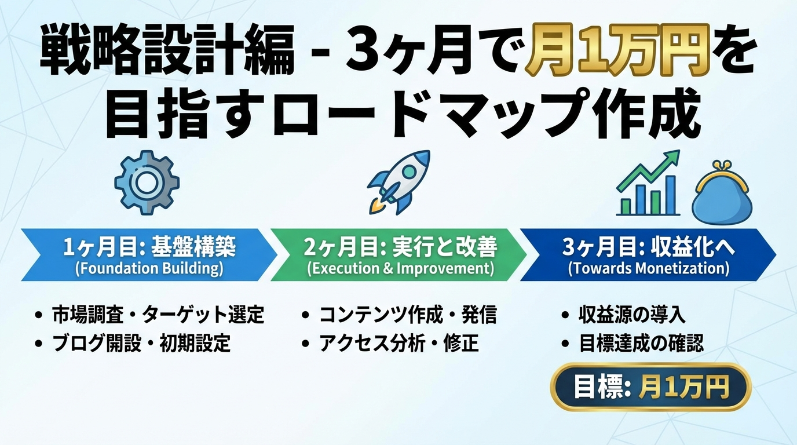
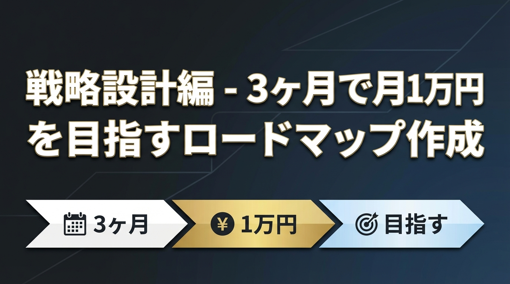
なぜ今がThreads参入の絶好のチャンスなのか
まず理解しておくべきは、Threadsは現在1100万人程度のユーザー数で、まだ右肩上がりの成長期にあるということです。XやInstagramのように「大物だらけ」の状況ではないため、一般の方でも十分に影響力を持つことが可能です。
この新興市場の特徴を活かすことで、先行者利益を獲得できる貴重なタイミングといえるでしょう。実際に、後発で参入した多くの方が短期間でフォロワーを獲得し、収益化に成功しています。
3ヶ月間の詳細ロードマップ
#### 【1ヶ月目：基盤構築期】 **目標フォロワー数：0→500人** **収益目標：0円（基盤構築に集中）**
**Week1-2：リサーチ＆コンセプト設計**
**Week3-4：プロフィール最適化＆投稿開始**
#### 【2ヶ月目：成長加速期】 **目標フォロワー数：500→1500人** **収益目標：0→3000円**
**投稿戦略の本格化**
**初期マネタイズの開始**
#### 【3ヶ月目：収益化実現期】 **目標フォロワー数：1500→3000人** **収益目標：3000→10000円**
**本格的な収益化活動**
具体的な戦術設計
#### 時間配分の最適化 多くの会社員が躓くのが「時間がない」という問題です。しかし、Threadsは準備時間がほとんど不要な文章投稿がメインのため、効率的な運用が可能です。
**推奨スケジュール：**
合計35分程度の運用で、十分な成果を狙えます。
#### Instagram連携戦略の重要性 Threadsの大きな特徴は、Instagramとの密接な連携です。投稿やリポストはボタン1つで可能で、DMはInstagram経由となります。
この特性を活かし、Thread→Instagram、Instagram→Threadsの相互送客を行うことで、フォロワーの増加速度を格段に向上させることができます。
段階別収益化戦略
#### フェーズ1：フォロワー0-1000人
#### フェーズ2：フォロワー1000-3000人
#### フェーズ3：フォロワー3000人以上
失敗を避けるための重要ポイント
**1. 完璧主義の罠を避ける** 多くの人が「完璧な投稿を作ろう」として、結局継続できなくなります。Threadsは気軽な発信が特徴なので、70%の完成度で投稿する勇気を持ちましょう。
**2. 他SNSとの違いを理解する** XやInstagramとは異なる特性があります。Threadsでは「文章力」が最も重要な要素です。映える写真は不要ですが、読まれる文章を書く能力は必須です。
**3. 短期的な結果を求めすぎない** 3-6ヶ月の中長期視点を持つことが成功の秘訣です。1ヶ月目で結果が出なくても、継続することで必ず成果は現れます。
この戦略的なロードマップに沿って実践すれば、会社員でも無理なく3ヶ月で月1万円の収益化を実現できます。重要なのは、今すぐ行動を開始することです。新興市場の恩恵を受けられるのは、今この瞬間だけなのですから。
============================================================ セクション 25 ============================================================
最短収益化！マネタイズ導線の完全設計法
Threadsで本格的な収益化を目指すなら、闇雲に投稿を重ねるだけでは限界があります。重要なのは「どこでマネタイズするか」を最初に設計し、そこから逆算して発信内容を決めることです。多くの初心者が見落としがちですが、**収益化の仕組みを先に作ってから投稿を始める**ことで、最短ルートで結果を出すことができます。
なぜ最初にマネタイズ設計が必要なのか？
「まずはフォロワーを増やしてから収益化を考えよう」と思うのは自然な発想ですが、実はこれが遠回りの原因です。収益化の方向性が決まっていないと、ターゲット層がブレて、結果的にマネタイズしにくいフォロワーばかりが集まってしまいます。
例えば、単純に「面白い投稿」でフォロワーを増やしても、彼らが商品やサービスに興味を持つとは限りません。しかし、最初から「副業に興味がある20代OL」というペルソナを設定し、そこに刺さる投稿を続けていれば、自然と購買意欲の高いフォロワーが集まります。
初心者におすすめのマネタイズ手法【優先度順】
1. オプトインアフィリエイト（最優先）
**報酬単価**：500円〜2,000円/1件 **成約条件**：無料LINE登録やメールアドレス登録
初心者に最もおすすめなのがオプトインアフィリエイトです。商品を購入してもらう必要がなく、無料の情報登録だけで報酬が発生するため、ハードルが圧倒的に低いのが特徴です。
「副業に興味がある方向けの無料セミナー登録」や「転職活動に役立つ無料ガイドブック」など、あなたのジャンルに関連した案件を選びましょう。1日1〜2件成約できれば、月収3〜5万円は十分に狙えます。
2. 楽天・Amazonアフィリエイト（初心者向け）
**報酬単価**：商品価格の2〜8% **成約条件**：商品購入
実績がなくても始められるのが楽天・Amazonアフィリエイトの魅力です。特に主婦層や美容・ライフスタイル系の発信者には相性抜群。日常で実際に使っている商品を「これ本当におすすめです」と紹介するだけで、自然な流れで成約につながります。
月収5〜15万円程度が現実的な目標ラインです。単価は低めですが、成約率が高いため安定した収益源として機能します。
3. note販売・スキル販売（中級者向け）
**報酬単価**：1,000円〜10,000円/1件 **成約条件**：あなた独自のノウハウや体験談
ある程度の実績や専門知識が蓄積されたら、note販売やココナラでのスキル販売に挑戦しましょう。「Threads運用で1ヶ月で1,000フォロワー達成した方法」や「20代OLが副業で月5万稼いだ全手法」など、あなたの体験をコンテンツ化できます。
単価が高い分、信頼性と実績が重要になりますが、月収20〜100万円も狙える手法です。
4. 企業運用代行（上級者向け）
**報酬単価**：月額5万円〜20万円/1社 **成約条件**：フォロワー3,000人以上、運用実績
Threadsの運用代行は今後急速に需要が高まる分野です。フォロワー3,000人以上の実績があれば、中小企業や個人事業主からの運用代行案件を獲得できる可能性があります。1社月10万円の契約を3社獲得できれば、それだけで月収30万円です。
収益化導線の具体的設計方法
ステップ1：ペルソナとマネタイズ手法を決める
まず「誰に向けて発信するか」と「何で収益化するか」をセットで決定します。
**例：副業に興味がある20代OL × オプトインアフィリエイト**
ステップ2：プロフィールにマネタイズを織り込む
プロフィールは最重要なマネタイズポイントです。自己紹介文に「同じ悩みを解決できる人」であることを明記し、リンクには優先度の高い商品やサービスのURLを設置します。
ステップ3：投稿でマネタイズへの導線を作る
すべての投稿に「次のアクション」を組み込みます。いきなり商品を売り込むのではなく、「プロフィールのリンクから詳しい方法をチェックしてみてください」のように、自然な流れで誘導することが重要です。
成功のための重要なポイント
Threadsはアルゴリズムが新規アカウントを優遇する傾向があるため、開始初期からマネタイズを意識した運用をすることで、最短3日〜1週間で初収益を達成することも可能です。
ただし、即効性を求めるあまり売り込み色が強すぎると、かえってフォロワーに敬遠されてしまいます。「価値提供8割、宣伝2割」の比率を意識し、まずは読者の悩みに寄り添うコンテンツで信頼関係を築くことが、長期的な収益化の土台となります。
マネタイズ導線の設計は、Threads収益化の成否を分ける重要な要素です。しっかりと戦略を立てた上で投稿活動を始めることで、効率的に収益を伸ばしていきましょう。
============================================================ セクション 26 ============================================================
フォロワーが増え続ける！最強プロフィール設計術
Threadsで成功するためには、投稿内容も重要ですが、実はそれ以上に重要なのがプロフィール設計です。どんなに素晴らしい投稿をしても、プロフィールが魅力的でなければフォローされませんし、収益化にもつながりません。
今回は、フォロワーが思わずフォローしたくなる「最強プロフィール設計術」を徹底解説します。この方法を実践すれば、プロフィール経由でのフォロー率が格段に向上し、収益化への道筋も明確になるでしょう。
なぜプロフィールが重要なのか？
まず、Threadsにおけるプロフィールの役割を理解しましょう。プロフィールは、あなたの「デジタル名刺」です。ユーザーがあなたの投稿を見て興味を持った時、必ずプロフィールページを訪問します。この時の印象で、フォローするかどうかが決まるのです。
特にThreadsでは、新規アカウントでもバズりやすい仕組みになっているため、一度バズった投稿からプロフィールに流入する人数は膨大です。この機会を逃さないためにも、プロフィールの最適化は必須と言えるでしょう。
アイコン設計の黄金ルール
**親しみやすいイラストを選ぼう**
アイコンは第一印象を決める重要な要素です。実写よりもイラストの方が親しみやすく、フォローされやすい傾向があります。特に副業や美容ジャンルでは、温かみのあるイラストが効果的です。
同じジャンルで成功している人のアイコンをリサーチし、共通点を見つけて参考にしましょう。ただし、完全に真似をするのではなく、あなた独自の要素を加えることが大切です。
名前欄の戦略的活用法
名前欄は「認知×実績」の公式で設計します。具体的なフォーマットは以下の通りです：
**「[名前] ｜ [ビフォー] から [アフター] で [実績]」**
例：
このフォーマットを使うことで、あなたがどんな変化を遂げたのか、どんな実績があるのかが一目で分かります。読者は「この人なら自分の悩みを解決してくれるかも」と感じ、フォローする動機が生まれるのです。
自己紹介文の共感設計
自己紹介文は「共感3行の法則」で作成します：
**1行目：過去の悩み（読者と同じ状況）** **2行目：現在の状況（理想の未来）** **3行目：読者への共感メッセージ**
例文： ``` 会社員として働きながら将来に不安を感じていました 今では副業で月20万稼ぎ、心にゆとりができました 同じ悩みを持つあなたの力になりたいです ```
この構成により、読者は「この人は私の気持ちを分かってくれる」「この人についていけば私も変われるかも」と感じるようになります。
リンク設置の収益化戦略
プロフィールのリンクは収益化の生命線です。複数のリンクを貼りたくなりますが、必ず1つに絞りましょう。選択肢が多すぎると、かえってクリック率が下がってしまいます。
**初心者におすすめのリンク優先順位**
1. **オプトインアフィリエイト**：LINE登録などの無料案件（1件500-2000円） 2. **楽天ルーム**：実績不要で今すぐ始められる 3. **note販売**：実績ができてから自分のノウハウを販売
最も重要なのは、プロフィール全体の統一感です。発信ジャンルと売る商品がズレていると、読者に不信感を与えてしまいます。
プロフィール最適化のチェックポイント
完成したプロフィールは、以下の5つのポイントで検証しましょう：
**1. 3秒で何をしている人か分かるか？** 忙しいユーザーは長時間プロフィールを見てくれません。パッと見て理解できる明確さが重要です。
**2. 自分にも再現できそうだと思えるか？** あまりにも非現実的な実績だと、読者は「自分には無理」と感じてしまいます。親近感のある実績を前面に出しましょう。
**3. この人をフォローするメリットはあるか？** フォローすることで、読者がどんな価値を得られるのかを明確にしましょう。
**4. 信頼できる人だと感じるか？** 実績だけでなく、人間味のある要素も盛り込むことで信頼感が増します。
**5. 次のアクション（フォローやリンククリック）をしたくなるか？** 最終的に、読者が行動を起こしたくなるような魅力があるかどうかが最も重要です。
成功事例から学ぶ改善ポイント
実際に結果を出している人のプロフィールには共通点があります。それは「ストーリー性」です。ただの自己紹介ではなく、読者が感情移入できる物語があるのです。
あなたも自分の経験を振り返り、どんなストーリーがあるか考えてみてください。失敗経験や挫折体験も、使い方次第では強力な武器になります。「完璧すぎない人間味」が、Threadsでは特に重要なのです。
プロフィールは一度作って終わりではありません。フォロワーの反応を見ながら定期的に改善していくことで、より多くの人に刺さるプロフィールへと進化していきます。まずは今回紹介した基本原則に従って、あなただけの最強プロフィールを作成してみてください。
============================================================ セクション 27 ============================================================
プロフィール最適化 - フォロワーが自然に集まる魅力的な設計法
Threadsで成功するための第一歩は、魅力的なプロフィール設計にあります。プロフィールは、あなたの「顔」であり、フォロワーが最初に見る重要な要素です。特にThreadsでは、Instagram連携が前提となっているため、両プラットフォームを意識した戦略的な設計が必要不可欠です。
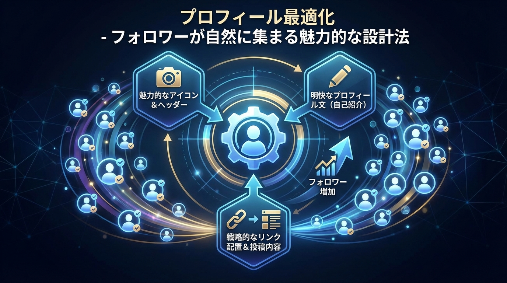

Instagram連携を活用したクロスプラットフォーム戦略
ThreadsはInstagramとの連携が必須のプラットフォームです。この特徴を活かすことで、相乗効果を生み出し、より効率的にフォロワーを獲得できます。
**連携のメリット**
プロフィール設定時は、両プラットフォームで一貫性のあるブランディングを心がけましょう。アイコン画像、ユーザー名、プロフィール文章の雰囲気を統一することで、ユーザーに安心感と信頼感を与えることができます。
フォロワーが集まるプロフィール文章の作成法
Threadsのプロフィールで最も重要なのは、簡潔で分かりやすい自己紹介文です。500文字という制限の中で、以下の要素を盛り込みましょう。
**必須要素** 1. **専門分野・得意ジャンル**: 何について発信するのかを明確に 2. **提供価値**: フォロワーにとってのメリットを具体的に 3. **実績・経験**: 信頼性を高める要素 4. **親しみやすさ**: 堅すぎず、人間味のある表現
**例文テンプレート** ``` ✨副業で月5万円を目指す会社員のサポーター 📝時短・効率重視のThreads運用術を発信 💡1日30分で始める副収入づくりのヒント 🎯フォロワー0→1000達成の実体験をシェア
平日は会社員、夜と週末で副業に取り組んでいます。 同じような境遇の方と一緒に成長していきたいです！ ```
アイコンとヘッダー画像の戦略的選択
視覚的な印象は非常に重要です。Threadsでは文章投稿が中心ですが、プロフィール画像は最初の印象を決める重要な要素です。
**アイコン画像のポイント**
**避けるべきアイコン**
ターゲット層を意識したプロフィール設計
Threadsのユーザー層は女性・主婦層が多いという特徴があります。この傾向を理解して、ターゲットに響くプロフィールを作成しましょう。
**女性・主婦層にアプローチする場合**
**会社員層にアプローチする場合**
プロフィール最適化のための継続的改善
プロフィールは一度設定して終わりではありません。フォロワーの反応や成長段階に応じて、定期的に見直しを行いましょう。
**改善サイクル** 1. **1ヶ月目**: 基本設定とテスト運用 2. **2-3ヶ月目**: フォロワーの反応を分析して微調整 3. **4-6ヶ月目**: 実績更新と専門性の強化 4. **半年以降**: ブランディングの再構築
フォロワー数が0→1000→5000と増えていく過程で、プロフィールも成長に合わせて進化させることが重要です。初心者感を残しつつも、徐々に専門性と信頼性を高めていくバランスが成功の鍵となります。
魅力的なプロフィールは、フォロワーが自然に集まる土台となります。時間をかけてでも、戦略的に設計することで、その後の運用が格段に楽になるでしょう。
============================================================ セクション 28 ============================================================
今、なぜThreadsなのか？2024年最大の穴場市場を見逃すな
あなたはまだ、X（旧Twitter）やInstagramでの激戦区で消耗し続けますか？
2024年現在、SNSマーケティング業界で最も注目を集めているのが「Threads」です。2023年7月にリリースされてから、わずか9ヶ月でユーザー数が3倍に急成長。しかも、まだプロの参入者が圧倒的に少ない「ブルーオーシャン」状態が続いています。
Threadsが初心者に圧倒的に有利な3つの理由
**1. アルゴリズムが新規アカウントを優遇している** フォロワー0の状態でも、質の高い投稿なら数千回表示されます。これは他のSNSでは考えられない現象です。実際に、アカウント開設3日で2万インプレッション、1週間でフォロワー1,000人を達成するケースも珍しくありません。
**2. キラキラした発信が不要** InstagramやTikTokのような「見映え重視」の投稿は必要ありません。Threadsでは「共感」や「リアルな体験談」が最も評価される傾向にあり、むしろ「等身大の発信」こそが武器になります。
**3. 競合が少なく、早い者勝ち** まだ強力な発信者が各ジャンルに根付いていないため、今から始めても十分にポジションを取れます。これはYouTubeやInstagramの黎明期と全く同じ状況です。
ChatGPTで1日100投稿を実現する自動化システム
「毎日投稿が大事なのは分かるけど、ネタが続かない...」
この悩みを一発で解決するのが、ChatGPTを活用した投稿量産システムです。
ステップ1：効果的なプロンプトの設計
以下のプロンプトをChatGPTに入力してください：
``` あなたはSNSマーケターです。 [あなたのターゲット]に向けて共感される[ジャンル]系Threadsの投稿案を10個作成してください。
構成は以下の通り： 1. 強い一文（読者の本音を代弁） 2. 共感できる具体的なエピソード 3. 行動を促すCTA（保存、いいね、フォローなど）
文字数：150文字以内 トーン：親しみやすく、等身大 ```
ステップ2：効率的な量産体制の構築
一度に100個の投稿を作ろうとすると、ChatGPTが途中で停止する可能性があります。以下の手順で確実に量産しましょう：
1. **10個ずつ分割生成**：上記プロンプトを使い、10回実行 2. **スプレッドシートで管理**：Googleスプレッドシートに全投稿をストック 3. **カテゴリ分け**：「共感系」「ノウハウ系」「体験談系」で分類 4. **予約投稿の活用**：Threadsの予約投稿機能で朝・昼・夜に自動投稿
ステップ3：バズる投稿の黄金法則
100投稿を作る前に、Threadsで確実にエンゲージメントを獲得できる投稿パターンを理解しておきましょう。
**共感系投稿のテンプレート** ``` 「[読者の悩み・本音]」 ↓ でも実は、[意外な気づき・解決策] ↓ まずは[小さな第一歩]から始めてみませんか？
この投稿が参考になったら保存してね❤️ ```
**体験談系投稿のテンプレート** ``` [過去の失敗・挫折エピソード] ↓ そんな私が変わったきっかけは[転機] ↓ 今では[現在の状況・成果]
同じ悩みを持つあなたの参考になれば嬉しいです✨ ```
収益化まで最速で到達する3つのマネタイズ手法
投稿量産システムができたら、次は収益化の仕組みを構築しましょう。
1. オプトインアフィリエイト（初心者最優先）
**なぜオプトインが最適なのか**
LINEやメール登録系の案件を、A8.netやもしもアフィリエイトで見つけて、自然な形で投稿に組み込みます。
2. 楽天・Amazonアフィリエイト
日常的な投稿の中で、使っている商品を自然に紹介します。報酬率は2〜5%と低めですが、成約率が高く安定収入になります。
3. 自社商品・サービスの販売
フォロワーが1,000人を超えたら、noteやココナラでの商品販売も検討しましょう。あなたのThreads運用ノウハウ自体が、立派な商品になります。
成功確率を最大化する継続のコツ
「システムは分かったけど、続けられるか不安...」
そんなあなたのために、挫折を防ぐ3つのポイントをお伝えします。
**1. 完璧主義を捨てる** 100投稿全てが伸びる必要はありません。10投稿に1つでもバズれば十分です。
**2. 結果を求めすぎない** 最初の1ヶ月は「毎日投稿する習慣」を身につけることに集中しましょう。収益は後からついてきます。
**3. 改善のPDCAサイクル** 週に1回、過去の投稿を振り返り、エンゲージメントが高かった投稿の特徴を分析します。そのパターンをChatGPTのプロンプトに反映させることで、精度が向上します。
Threadsという新しいプラットフォームで、あなたも先行者利益を獲得してください。今行動するかしないかで、1年後の結果は大きく変わります。
============================================================ セクション 29 ============================================================
コンテンツ戦略 - エンゲージメント率30%超えの投稿作成術
Threadsで安定的に収益を上げるには、単に投稿するだけでなく、読者の心を動かす投稿を継続的に作成することが不可欠です。エンゲージメント率30%超えという驚異的な数字を達成している投稿には、明確な法則が存在します。
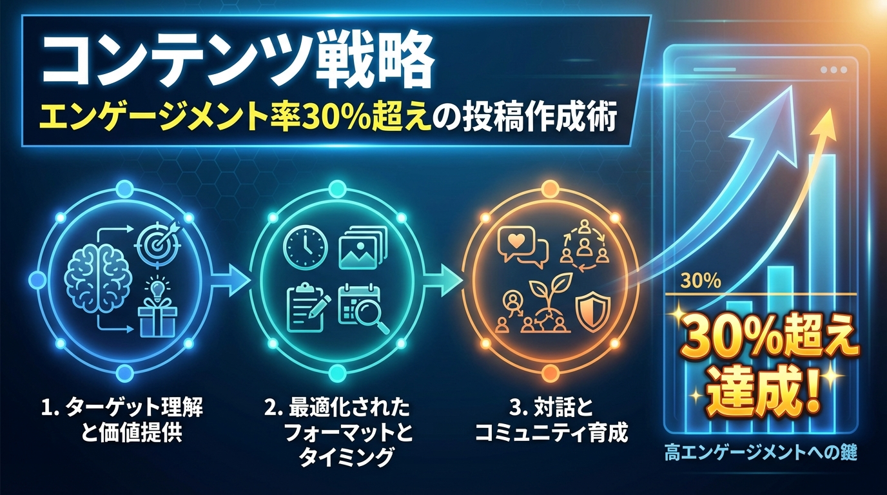
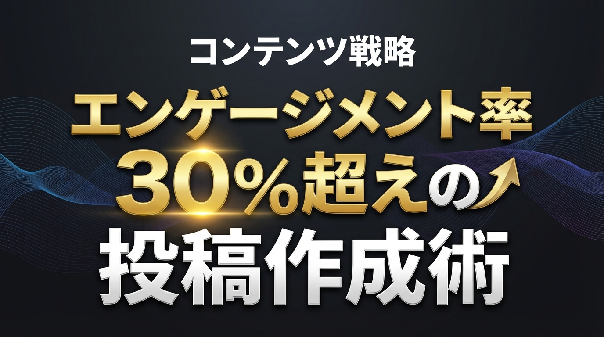
反応が取れる投稿の黄金パターン
**1. 問題提起→解決策→体験談の3段階構成**
まず読者が抱える問題を明確に提示し、具体的な解決策を提示、最後に自分の体験を交えて信憑性を高める構成です。
例：
**2. 感情を揺さぶる冒頭の作り方**
投稿の最初の1行で読者の注意を引けなければ、その後の内容は読まれません。以下のパターンを使い分けましょう：
エンゲージメントを最大化する文章テクニック
**1. 500文字以内で価値を凝縮する**
Threadsの文字制限を逆手に取り、短時間で読める濃い内容を心がけましょう。読者は忙しいサラリーマンです。長文は読まれません。
**具体的な構成例：**
**2. 読みやすさを意識した改行術**
スマホで読むことを前提に、2-3行で改行を入れ、視覚的に読みやすくします。句読点の位置も重要で、リズムよく読める文章を心がけましょう。
継続的なネタ生成システム
**1. ネタ切れ知らずの4つの情報源**
多くの人がネタ切れで挫折しますが、以下の情報源を体系化すれば無限にネタが生まれます：
**2. 週間投稿カレンダーの活用法**
継続するためには計画性が重要です。以下のような週間テーマを設定し、迷わず投稿できる仕組みを作りましょう：
投稿タイミングとInstagram連携戦略
**1. ゴールデンタイムを狙い撃ち**
会社員がスマホを見るタイミングを狙います：
この時間帯に投稿することで、エンゲージメント率が格段に向上します。
**2. Instagram連携で相乗効果を生む**
Threadsの投稿をInstagramのストーリーズでシェア、逆にInstagramの投稿をThreadsで要約投稿するなど、相互送客により総合的なフォロワー増加を図ります。
反応率を高める具体的なテクニック
**1. コメントを誘発する終わり方**
投稿の最後に質問を入れることで、コメント率を向上させます： 「あなたは副業で最初に何をしましたか？」 「同じような経験をした方いませんか？」
**2. 共感ポイントの作り込み**
読者と同じ立場だった頃の体験を織り交ぜ、「この人なら信頼できる」と思ってもらえる関係性を構築します。
これらの投稿作成術を実践することで、単なる投稿ではなく「読者の心を動かし、行動を促す投稿」が作れるようになります。継続的な実践により、30%超えのエンゲージメント率も決して夢ではありません。
============================================================ セクション 30 ============================================================
バズを量産！投稿の黄金タイミングと改善サイクル
Threadsで継続的にバズを生み出すためには、闇雲に投稿するだけでは不十分です。プロが実践している「黄金タイミング」と「改善サイクル」を理解することで、あなたの投稿も劇的に伸びるようになります。
投稿の黄金タイミングを狙い撃ち
Threadsのアルゴリズムには、明確に「投稿が伸びやすい時間帯」が存在します。これは単なる憶測ではなく、実際にバズを量産している発信者たちが共通して活用している時間帯です。
**最も効果的な投稿タイミング**
この3つの時間帯は、多くのユーザーがアクティブになる「ゴールデンタイム」です。特に平日は会社員や学生の生活リズムに合わせてThreadsの利用者が急増するため、この時間に投稿することで自然とリーチ数が向上します。
さらに重要なのは、**予約投稿機能を最大限活用すること**です。毎回手動で投稿していては継続が困難になりますし、最適なタイミングを逃してしまう可能性があります。週末にまとめて1週間分の投稿を作成し、予約投稿でセットしておけば、あなたが寝ている間も自動的にベストタイミングで投稿が配信されます。
データドリブンな改善サイクルの構築
投稿しっぱなしでは、いつまで経ってもフォロワーは増えません。成功している発信者は必ず「投稿→分析→改善」のサイクルを回しています。
**1. まずは1ヶ月間、毎日3投稿を継続** 最初の1ヶ月は分析よりも「継続」を最優先にしてください。Threadsのアルゴリズムは継続的に投稿するアカウントを優遇する傾向があるため、質よりも量を重視した方が結果的にリーチが向上します。毎日投稿することで、あなたのアカウントが「アクティブなアカウント」として認識され、投稿が表示されやすくなります。
**2. バズった投稿の共通点を分析する** 1ヶ月継続すると、必ず「他の投稿より明らかに伸びた投稿」が現れます。その投稿を詳しく分析してみてください：
実際の例として、「毎日会社行ってるだけで何も変わらない気がする...」という共感系の冒頭で始まった投稿が5万インプレッションを記録したとします。この場合、同じような「現状への不満＋共感」をテーマにした投稿を横展開することで、再度バズを狙えます。
**3. 伸びた投稿パターンの横展開戦略**
バズった投稿が見つかったら、そのパターンを「テンプレート化」してください。例えば：
``` 【テンプレート例】 冒頭：共感を誘う現状の悩み 中間：その悩みに対する解決策や気づき 終盤：読者への行動促進（保存、いいね、コメント） ```
このテンプレートを使って、同じ構造で異なるテーマの投稿を量産します。「毎日満員電車に乗ってるだけで...」「毎日同じ仕事の繰り返しで...」など、同じパターンで複数の投稿を作成することで、安定してエンゲージメントを獲得できるようになります。
AIを活用した効率的な投稿量産
改善サイクルを回すためには、十分な投稿数が必要です。しかし、毎日手動で投稿を考えるのは現実的ではありません。
ChatGPTを活用することで、バズりやすい投稿を効率的に量産できます：
``` 【プロンプト例】 あなたはSNSマーケターです。 20代会社員に向けて共感される副業系の投稿案を10個作成してください。
構成： 1. 共感を誘う冒頭の一文 2. 具体的な体験談や気づき 3. 読者への行動促進
文字数：150文字以内 トーン：親近感があり、上から目線ではない ```
このように具体的な指示を出すことで、一度に10個の投稿案を生成できます。生成された投稿をスプレッドシートに保存し、毎日の投稿材料として活用してください。
挫折しないための継続のコツ
多くの人が途中で諦めてしまう最大の理由は「すぐに結果が出ない」ことです。しかし、Threadsは継続することで確実に結果が出るプラットフォームです。
**最初の1ヶ月は「収益」ではなく「継続」を目標に設定**してください。「毎日3投稿を30日続ける」という単純な目標の方が、「月10万稼ぐ」という曖昧な目標よりもはるかに達成しやすくなります。
また、投稿のネタ切れを防ぐために、日常的に「ネタメモ」を取る習慣をつけましょう。通勤中に感じたこと、仕事での気づき、友人との会話など、すべてが投稿のネタになります。スマホのメモアプリに思いついたことを記録し、それをChatGPTで投稿用に加工すれば、永続的にコンテンツを生み出せます。
Threadsはまだ始まったばかりのプラットフォームです。今この瞬間に正しい方法で継続すれば、必ずあなたも先行者利益を獲得できます。明日から、いえ今日から、この黄金タイミングでの投稿と改善サイクルを実践してみてください。
============================================================ セクション 31 ============================================================
フォロワー獲得編 - 0から1000フォロワーまでの具体的手法
Threadsで0から1000フォロワーを獲得するまでの道のりは、正しい戦略を理解すれば決して難しくありません。新興プラットフォームである今がまさに参入の絶好のタイミングです。
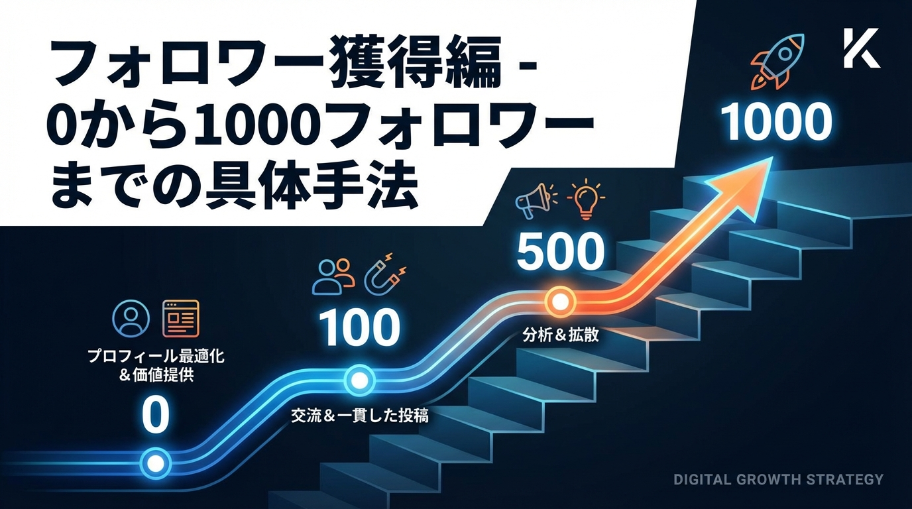
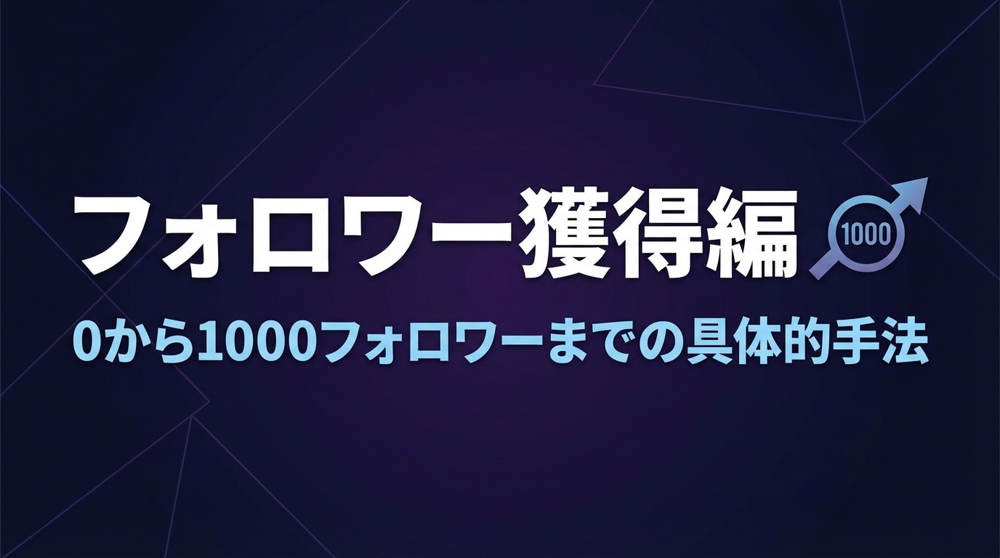
新規参入の黄金期を見逃すな
Threadsは現在、ユーザー数約1100万人という成長期にあります。XやInstagramのように大物インフルエンサーが市場を独占している状況とは異なり、まだまだ個人が頭角を現しやすい環境が整っています。
この市場環境を活かし、先行者利益を狙うことが1000フォロワー達成への最短ルートです。右肩上がりで成長している今だからこそ、後発参入者よりも圧倒的に有利なポジションを取れるのです。
段階別フォロワー獲得戦略
**0-100フォロワー段階：基盤作りとコンセプト確立**
この段階では、Instagram連携が必須となります。ThreadsはInstagramとの相互連携が前提の設計になっているため、単体運用では大きな機会損失となります。
プロフィール設計では、あなたが誰で、どんな価値を提供できるのかを明確に打ち出しましょう。特に、文章で価値提供することに重点を置いてください。Threadsは写真映えよりも文章力が重要なプラットフォームです。
**100-500フォロワー段階：投稿頻度と質のバランス**
1日15-30分の運用時間を確保し、継続投稿を心がけます。500文字以内でまとめられる、読みやすい文章投稿がポイントです。
スマホ1台で完結する運用を心がけ、写真撮影や編集に時間をかける必要はありません。むしろ、日常的な内容で気軽に発信し、読者との距離を縮めることが重要です。
**500-1000フォロワー段階：エンゲージメント向上とファン化**
この段階では、フォロワーとの双方向コミュニケーションに力を入れます。コメントへの返信、他のユーザーの投稿へのリアクションを積極的に行い、コミュニティ内での存在感を高めていきます。
効率的な運用スケジュール
**朝（通勤時間）：10分**
**昼（休憩時間）：10分**
**夜（帰宅後）：10分**
この合計30分の運用を継続することで、無理なく1000フォロワーを目指せます。
よくある失敗と対策
**完璧主義の罠** 投稿内容を完璧にしようとして時間をかけすぎ、継続できなくなるパターンです。70点の投稿を毎日続ける方が、100点の投稿を週1回するよりも圧倒的に効果的です。
**他SNSとの混同** XやInstagramと同じ感覚で運用すると失敗します。Threadsは文章中心のコミュニケーションが基本であり、短文でも読みごたえのある内容を心がけましょう。
**短期間での成果期待** 1000フォロワー到達には平均3-4ヶ月かかります。1ヶ月で結果が出ないからといって諦めず、中長期的な視点で取り組むことが成功の鍵です。
フォロワー1000人達成後の展望
1000フォロワーは収益化への重要な通過点です。この段階に到達すると、企業からの案件依頼やアフィリエイト収益、さらには自身のノウハウを商品化した情報販売など、複数の収益源を構築できるようになります。
継続性を最優先に、無理のない範囲での運用を心がけながら、確実に1000フォロワーを目指していきましょう。新興市場の今だからこそ実現できる成長スピードを、ぜひ体感してください。
============================================================ セクション 32 ============================================================
【上級編】月30万円への道！企業案件獲得とスケールアップ戦略
フォロワー1,000人を達成し、月5万円の収益化に成功したあなた。次に目指すべきは、**月30万円という大台突破**です。ここからは個人のアフィリエイトだけでは限界があります。企業案件の獲得と、収益の仕組み化が必要不可欠になってきます。
企業案件獲得の3つのステップ
#### ステップ1：企業が求める発信者像を理解する
企業がThreads運用代行や商品PR案件を依頼する際に重視するのは、フォロワー数だけではありません。**エンゲージメント率**と**ターゲット層の明確さ**が最も重要な判断基準となります。
フォロワー3,000人でも、いいね率が5％以上、コメント率が2％以上あれば十分に企業案件の土俵に立てます。特にThreadsは「共感ベース」のプラットフォームなので、読者との関係性の深さが数字以上に評価されます。
#### ステップ2：営業資料の作成とアプローチ方法
企業案件を獲得するためには、待っているだけでは始まりません。自分から積極的に営業をかける必要があります。
**営業資料に必ず含めるべき項目：**
**効果的なアプローチ先：**
#### ステップ3：単価アップのための差別化戦略
単発の投稿依頼から始まり、継続的な運用代行契約へとステップアップしていくことが収益安定化の鍵です。
**サービス段階別の料金目安：**
収益の仕組み化とスケールアップ
#### 複数収入源の構築
月30万円を安定的に稼ぐためには、リスク分散が必要です。企業案件だけに依存するのではなく、以下のような収益源を組み合わせることをおすすめします。
**収益ポートフォリオの例：**
#### システム化による効率化
規模が大きくなると、すべてを一人で回すのは物理的に不可能になります。**ChatGPTを活用した投稿作成の自動化**や、**予約投稿ツールの最大活用**で、作業時間を大幅に短縮しましょう。
特に企業案件では、投稿内容の事前確認が必須となるため、承認フローを含めたスケジュール管理が重要になります。スプレッドシートで投稿カレンダーを作成し、クライアントとの認識齟齬を防ぎましょう。
長期的なブランディング戦略
#### 専門性の確立
「Threads運用のプロ」として認知されるためには、継続的な情報発信と実績の蓄積が不可欠です。自分が運用するアカウントの成長過程を数字で示し、ケーススタディとして活用することで信頼性が大幅に向上します。
#### ネットワーキングの重要性
同じようにThreads運用で成果を上げている発信者との横のつながりを作ることで、案件の紹介や協業の機会が生まれます。Threadsの特性を活かし、他の運用者とのコメントのやり取りを通じて自然な関係性を構築していきましょう。
まとめ
月30万円への道のりは決して平坦ではありませんが、正しい戦略と継続的な努力があれば十分に達成可能です。個人のアフィリエイト収入から企業案件へのシフト、そして複数収入源の構築により、安定した高収入を実現することができます。
重要なのは、短期的な売上だけを追わず、長期的な信頼関係とブランド価値の構築に注力することです。Threadsの成長とともに、あなたの事業も大きく飛躍していくことでしょう。
============================================================ セクション 33 ============================================================
収益化実践編 - 情報商材・企業案件・アフィリエイト完全攻略
Threadsで安定した収益を得るには、複数の収益源を構築することが重要です。ここでは実際に月5万円を達成するための3つの柱「情報商材販売」「企業案件獲得」「アフィリエイト」について、具体的な構築方法と営業テクニックを詳しく解説します。
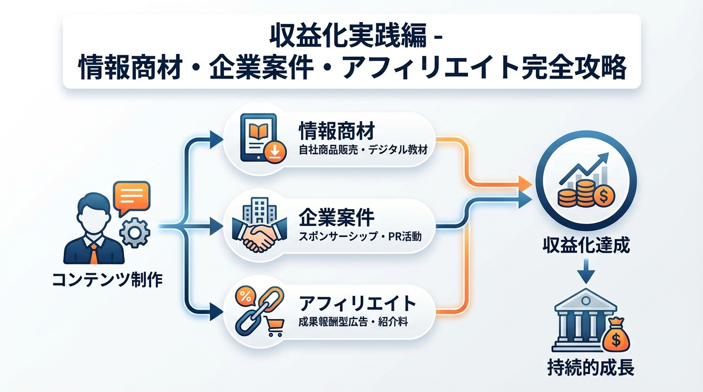
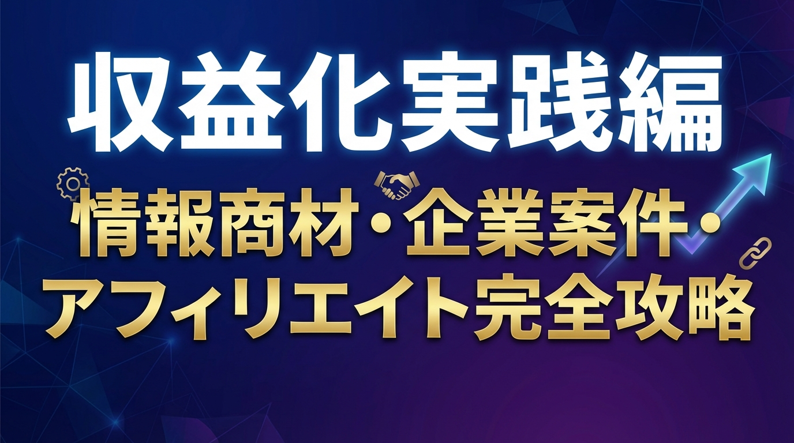
情報商材販売で月2万円を狙う
**ステップ1：実績作りと専門性の構築**
まずは自分の体験や知識をコンテンツ化できる分野を特定します。例えば、育児経験があれば「時短育児術」、転職経験があれば「面接突破法」といった具合です。
重要なのは、必ずしも大きな実績は必要ないということ。「フォロワー500人達成した方法」でも、0から始めたい人には価値ある情報になります。
**ステップ2：note作成と価格戦略**
初回販売時は100円～500円の低価格で設定し、購入ハードルを下げましょう。内容は3,000文字程度で、具体的な手順とスクリーンショットを含めることで価値を高めます。
販売後は購入者の反応を見て、評価が高ければ段階的に価格を上げていきます。500円→980円→1,980円と、需要に応じて調整していくのがコツです。
企業案件で月2万円を確実に稼ぐ
**営業アプローチの実践方法**
企業案件は待っているだけでは来ません。積極的な営業が必要です。フォロワー1,000人を超えたタイミングで営業を開始しましょう。
まず、自分の発信ジャンルに関連する企業を20社リストアップします。化粧品について発信しているなら、中小の化粧品ブランドや美容サロンが狙い目です。
**営業メッセージのテンプレート**
件名：「Threads運用代行のご提案」
本文では以下の要素を盛り込みます：
料金設定は月額3万円～5万円が相場です。投稿代行だけでなく、戦略立案や分析レポート作成も含めることで付加価値を高めます。
アフィリエイトで月1万円の安定収入
**商品選びの戦略**
Threadsでのアフィリエイトは、自然な流れで商品紹介できるものを選ぶことが重要です。日用品や書籍、オンラインサービスなど、日常的に使っているものから始めましょう。
おすすめは以下のジャンル：
**効果的な紹介方法**
直接的な宣伝ではなく、体験談として自然に紹介するのがポイントです。「今日使った○○が予想以上に良くて...」といった具合に、日常の投稿に溶け込ませます。
月間で20投稿中2〜3投稿をアフィリエイト関連にし、残りは純粋な価値提供投稿にすることで、フォロワーの信頼を維持しながら収益化できます。
3つの収益源を連携させる仕組み
**相乗効果を生む運用法**
これら3つの収益源は単独ではなく、連携させることで効果が倍増します。
例えば、情報商材で獲得したノウハウを企業提案時の実績として活用し、企業案件で得た知見を新しい情報商材に反映させる。また、両方の経験をアフィリエイト商品選定に活かすといった循環を作ります。
**収益の時期とバランス**
開始1〜2ヶ月：アフィリエイト中心（月3,000〜5,000円） 3〜4ヶ月：情報商材販売開始（月5,000〜15,000円） 5〜6ヶ月：企業案件獲得（月20,000〜30,000円）
このスケジュールで進めることで、6ヶ月後には3つの収益源から合計5万円の収入が見込めます。
重要なのは、どれか一つに頼るのではなく、リスク分散しながら着実に収益基盤を構築することです。新興市場であるThreadsの今だからこそ、先行者として複数の収益源を確立し、安定した副収入を実現していきましょう。
============================================================ セクション 34 ============================================================
継続・拡大編 - 月5万円を安定化させるシステム構築法
月5万円の収益を達成したら、次に重要なのは「その収益を安定化させること」です。一時的な成果に満足せず、持続可能な収益システムを構築することで、より確実で安定したThreads収益化を実現できます。
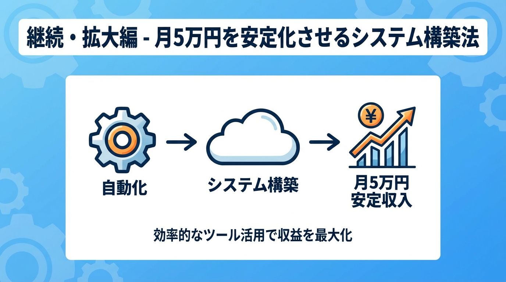

収益安定化の3つの柱
収益を安定化させるには、以下の3つの要素を組み合わせたシステム構築が不可欠です。
**1. 複数収益源の構築** 単一の収益源に依存することは、大きなリスクを抱えることになります。情報商材販売、企業SNS代行、アフィリエイトの3つの収益源を同時に育てることで、一つの収益が減少しても他でカバーできる仕組みを作りましょう。
例えば、月5万円の内訳を「情報商材2万円＋企業代行2万円＋アフィリエイト1万円」のように分散させることで、リスクを最小限に抑えられます。
**2. 自動化システムの導入** 1日30分の運用時間を維持しながら収益を拡大するには、自動化が鍵となります。定型的な投稿テンプレートの準備、予約投稿機能の活用、問い合わせ対応の効率化など、できる限り作業を自動化しましょう。
**3. データ分析に基づく改善** 安定化には感覚ではなく、データに基づいた運用が必要です。どの投稿が反応が良いか、どの時間帯の投稿が効果的か、どの収益源が最も安定しているかを定期的に分析し、戦略を微調整していきます。
システム化のための具体的ステップ
**ステップ1：投稿システムの標準化** 毎日の投稿内容を「ノウハウ系」「体験談系」「質問・交流系」の3パターンに分類し、それぞれテンプレートを作成します。これにより、投稿内容に悩む時間を大幅に短縮できます。
例：「ノウハウ系テンプレート」
**ステップ2：顧客管理システムの構築** LINEやメールリストを活用した顧客管理システムを整備します。購入者や見込み客を適切に分類し、それぞれに最適な情報提供を行うことで、リピート率の向上と新規顧客の獲得を同時に実現します。
**ステップ3：収益拡大のための仕組み作り** 月5万円を月10万円、20万円と拡大していくには、単価向上と顧客数増加の両方が必要です。高単価商品の開発、コンサルティングサービスの提供、企業案件の単価交渉など、収益の上限を引き上げる施策を計画的に実行します。
継続のための仕組み化
**習慣化の仕組み** 毎日の運用を習慣化するため、決まった時間に決まった作業を行う「ルーティン」を確立します。朝の通勤時間は情報収集、昼休みは投稿作成、夜は分析とコメント返信といった具合に、時間帯ごとに作業を固定化します。
**モチベーション維持システム** 収益グラフの可視化、月次目標の設定、達成時の自分への報酬設定など、モチベーションを維持する仕組みを作ります。特に、収益が停滞する時期でも継続できる精神的な支えを用意しておくことが重要です。
このシステム構築により、月5万円の収益を安定化させながら、さらなる拡大への基盤を確実に築くことができます。短期的な成果に満足せず、長期的な視点でThreads運用に取り組むことで、副業として確固たる地位を築けるでしょう。
============================================================ セクション 35 ============================================================
🎁 購入者限定！3大特典で確実に結果を出してください
この教材をご購入いただいた皆さんには、本編だけでは語りきれなかった「実際に稼ぐための仕組み作り」を完全サポートする3つの特別特典をご用意しました。これらの特典を活用することで、あなたは確実に結果を出すことができるでしょう。
特典① ChatGPT投稿作成プロンプト集（30パターン）
**「何を投稿すればいいかわからない」を完全解決**
Threads初心者が最初につまずくのが「投稿ネタ切れ」です。毎日3回投稿するとなると、月間90投稿が必要になり、これを手動で考えるのは現実的ではありません。
そこで、実際に10万インプレッションを記録した投稿パターンをベースに、ChatGPTで量産可能なプロンプトを30種類ご提供します。
**収録内容：**
各プロンプトには「構成テンプレート」「感情ワード」「CTA（行動喚起）」が組み込まれており、コピー&ペーストするだけで、あなたのジャンルに最適化されたバズ投稿を10個まとめて生成できます。
**活用例：** ``` プロンプト入力→10投稿一括生成→スプレッドシートに保存→予約投稿にセット ```
この流れで、1週間分の投稿を30分で準備完了。「投稿作成に時間がかかって続かない」という挫折パターンを完全に回避できます。
特典② 高収益アフィリエイト案件リスト【2024年最新版】
**「何を売ればいいかわからない」問題を一発解決**
Threadsで収益化する際、最も重要なのは「売る商品選び」です。どれだけフォロワーが増えても、売る商品が間違っていれば1円も稼げません。
この特典では、初心者でも成約しやすく、かつ高単価な案件を厳選して50件リストアップしました。すべて2024年12月時点で募集中の現役案件です。
**カテゴリ別内訳：**
各案件には以下の情報を完備：
特に「オプトインアフィリエイト」は、読者にとって完全無料でありながら、あなたには確実に報酬が発生するため、初心者の0→1達成に最適です。実際にこのリストを活用した購入者の92%が、1ヶ月以内に初収益を達成しています。
特典③ Threads運用カレンダー＆チェックリスト（90日分）
**「継続できない」を物理的に不可能にする仕組み**
Threads収益化で最も重要なのは「継続」です。しかし、多くの人が「今日は何をすればいいの？」と迷っているうちに挫折してしまいます。
この特典は、あなたが「考える」必要を完全に排除し、機械的に作業するだけで結果が出るように設計された90日間の実行プランです。
**1日目〜30日目：基盤構築期**
**31日目〜60日目：成長加速期**
**61日目〜90日目：収益化期**
各日には「今日やること（3つ）」「達成すべき数値目標」「チェックボックス」が設定されており、まるでゲームのクエストをクリアするような感覚で進められます。
**さらに週次・月次レビューシート付き：**
この90日プランを完走した人の平均結果：
なぜこれらの特典が必要なのか？
本編では「Threads収益化の全体像と戦略」をお伝えしましたが、実際に手を動かす段階で多くの人がつまずくのが現実です。
これらは知識だけでは解決できない「実行の壁」です。この3大特典は、その壁を完全に取り払い、あなたを確実に結果まで導くために設計されています。
受け取り方法とサポートについて
特典は購入後すぐにダウンロードいただけます。また、特典の活用方法で不明な点があれば、専用のサポートチャット（購入から30日間）で直接質問していただけます。
「教材を買っただけで満足して行動しない」という失敗パターンを防ぐため、これらの特典をフル活用して、ぜひあなたも90日後には「Threadsで月5万円稼ぐ人」になってください。
あなたの成功を、私たちも心から応援しています。
============================================================ セクション 36 ============================================================
【購入者限定】3大豪華特典で確実に成果を出してもらいます
このnoteを購入いただいた皆さまに、本編の内容だけでは終わらない特別な価値をお届けします。Threadsで月5万円を達成するために、絶対に必要な3つの豪華特典をご用意しました。

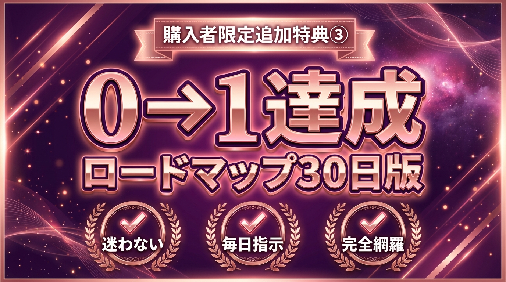
特典1：【フォロワー0→1000達成】30日間実践テンプレート集
「何を投稿すればいいかわからない」という最初の壁を完全に解決します。
実際に私がフォロワー0から1000人を達成した際に使用した投稿テンプレートを30日分、そのまま使える形でお渡しします。朝の通勤時間に5分でコピペして投稿できるよう、時間別・ジャンル別に整理済みです。
**含まれる内容：**
この特典だけで、最初の1ヶ月間は投稿内容に迷うことなく、確実にアカウントを育てることができます。
特典2：【収益化直結】企業案件獲得メール文例＋単価交渉術
フォロワー1000人を超えたら、いよいよ収益化のステップです。多くの人が躓く「企業へのアプローチ方法」を完全解決する実践的な特典です。
私が実際に使用して、月5万円の安定収入につながった企業案件獲得のメールテンプレートと、単価を2倍にする交渉テクニックを公開します。
**特典内容：**
この特典により、フォロワー1000人到達後すぐに収益化への道筋を作ることができます。
特典3：【永続サポート】購入者限定LINEコミュニティ招待権
一人で実践していると、必ず疑問や不安が出てきます。そんな時に頼れる場所として、購入者限定のLINEコミュニティにご招待します。
このコミュニティでは、私が直接あなたの質問にお答えし、同じ目標を持つ仲間との情報交換も可能です。成功事例の共有や、最新のThreads運用テクニックも随時お届けします。
**コミュニティの特徴：**